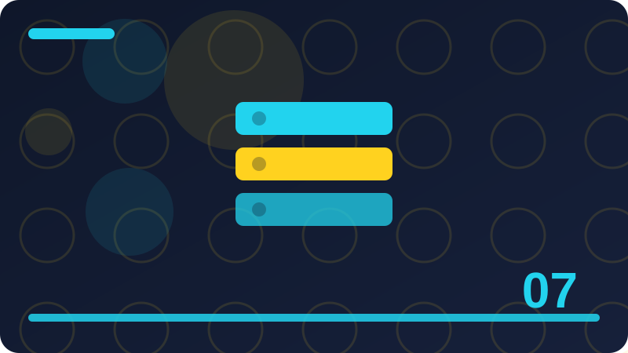

Chapter 7: Regression and Number Predictions

Section 1: Predicting a Number, Not a Label
This section is about predicting a number, not a label, and it belongs in this chapter because it helps you understand how a small program learns from examples and makes guesses you can check. Imagine you are teaching a friend to do predicting a number, not a label by showing examples only, with no extra hints, and notice how quickly your friend needs clear rules and honest feedback. A concrete toy case for predicting a number, not a label could use a short list you write yourself, such as a few labelled items or a few numbers, so every step stays visible and easy to repeat. Think of predicting a number, not a label as a habit your program learns from examples, rather than a magic trick, because every prediction it makes comes from patterns it has already seen in data you gave it.
A good way to picture predicting a number, not a label is to imagine sorting objects on a table by hand, noticing what you look at, what you ignore, and how you change your mind when a new object does not fit neatly. Beginners often rush past predicting a number, not a label, but taking time here pays off later, since almost every confusing result in a small project can be traced back to this one idea being unclear. When you work with predicting a number, not a label on your own machine, you stay in control, because you choose the examples, you can inspect every result, and nothing leaves your computer or costs money. The key question behind predicting a number, not a label is simple to ask, even when the answer takes practice, and that question is what pattern, if any, is really present in the examples in front of you.
People sometimes describe predicting a number, not a label with impressive words, yet the plain meaning stays the same, which is that a program looks at past examples and uses them to make a reasonable guess about a new case. To learn predicting a number, not a label well, try saying it back in your own words before you touch any code, because if you cannot explain it to a friend, the code will only hide the confusion for a while. A toy example makes predicting a number, not a label concrete, so imagine only a handful of examples, small enough to check by hand, and ask what a sensible person would guess before asking what a program should guess. One common mistake with predicting a number, not a label is to expect perfection, but real data is messy, people disagree about labels, and a useful model is often one that is right most of the time, not every time.
Another common mistake is to judge predicting a number, not a label from a single example, because one lucky or unlucky case tells you almost nothing, while a group of checked examples tells you a great deal.
# Tiny local toy example for predicting a number, not a label
examples = [("example one", 1), ("example two", 0), ("example three", 1)]
for name, label in examples:
print(name, "->", label)
print("Count:", len(examples))Check: In your own words, what does predicting a number, not a label mean, and what is one small example that shows it?
Section 2: Prices, Temperatures and Scores
This section is about prices, temperatures and scores, and it belongs in this chapter because it helps you understand how a small program learns from examples and makes guesses you can check. Imagine you are teaching a friend to do prices, temperatures and scores by showing examples only, with no extra hints, and notice how quickly your friend needs clear rules and honest feedback. A concrete toy case for prices, temperatures and scores could use a short list you write yourself, such as a few labelled items or a few numbers, so every step stays visible and easy to repeat. A good way to picture prices, temperatures and scores is to imagine sorting objects on a table by hand, noticing what you look at, what you ignore, and how you change your mind when a new object does not fit neatly.
Beginners often rush past prices, temperatures and scores, but taking time here pays off later, since almost every confusing result in a small project can be traced back to this one idea being unclear. When you work with prices, temperatures and scores on your own machine, you stay in control, because you choose the examples, you can inspect every result, and nothing leaves your computer or costs money. The key question behind prices, temperatures and scores is simple to ask, even when the answer takes practice, and that question is what pattern, if any, is really present in the examples in front of you. People sometimes describe prices, temperatures and scores with impressive words, yet the plain meaning stays the same, which is that a program looks at past examples and uses them to make a reasonable guess about a new case.
To learn prices, temperatures and scores well, try saying it back in your own words before you touch any code, because if you cannot explain it to a friend, the code will only hide the confusion for a while. A toy example makes prices, temperatures and scores concrete, so imagine only a handful of examples, small enough to check by hand, and ask what a sensible person would guess before asking what a program should guess. One common mistake with prices, temperatures and scores is to expect perfection, but real data is messy, people disagree about labels, and a useful model is often one that is right most of the time, not every time. Another common mistake is to judge prices, temperatures and scores from a single example, because one lucky or unlucky case tells you almost nothing, while a group of checked examples tells you a great deal.
When you test prices, temperatures and scores, keep your checking examples separate from your learning examples whenever you can, so your score measures learning rather than memory of answers already seen. The code in this section is deliberately tiny and uses only the Python standard library, which means you can run it, change one number, run it again, and watch exactly what changes.
# Tiny local toy example for prices, temperatures and scores
examples = [("example one", 1), ("example two", 0), ("example three", 1)]
for name, label in examples:
print(name, "->", label)
print("Count:", len(examples))Check: In your own words, what does prices, temperatures and scores mean, and what is one small example that shows it?
Section 3: A Line Through Scattered Points
This section is about a line through scattered points, and it belongs in this chapter because it helps you understand how a small program learns from examples and makes guesses you can check. Imagine you are teaching a friend to do a line through scattered points by showing examples only, with no extra hints, and notice how quickly your friend needs clear rules and honest feedback. A concrete toy case for a line through scattered points could use a short list you write yourself, such as a few labelled items or a few numbers, so every step stays visible and easy to repeat. Beginners often rush past a line through scattered points, but taking time here pays off later, since almost every confusing result in a small project can be traced back to this one idea being unclear.
When you work with a line through scattered points on your own machine, you stay in control, because you choose the examples, you can inspect every result, and nothing leaves your computer or costs money. The key question behind a line through scattered points is simple to ask, even when the answer takes practice, and that question is what pattern, if any, is really present in the examples in front of you. People sometimes describe a line through scattered points with impressive words, yet the plain meaning stays the same, which is that a program looks at past examples and uses them to make a reasonable guess about a new case. To learn a line through scattered points well, try saying it back in your own words before you touch any code, because if you cannot explain it to a friend, the code will only hide the confusion for a while.
A toy example makes a line through scattered points concrete, so imagine only a handful of examples, small enough to check by hand, and ask what a sensible person would guess before asking what a program should guess. One common mistake with a line through scattered points is to expect perfection, but real data is messy, people disagree about labels, and a useful model is often one that is right most of the time, not every time. Another common mistake is to judge a line through scattered points from a single example, because one lucky or unlucky case tells you almost nothing, while a group of checked examples tells you a great deal. When you test a line through scattered points, keep your checking examples separate from your learning examples whenever you can, so your score measures learning rather than memory of answers already seen.
The code in this section is deliberately tiny and uses only the Python standard library, which means you can run it, change one number, run it again, and watch exactly what changes. Reading code about a line through scattered points is useful, but changing it is better, so after you run the example, try a different input, a strange input, and an input that should confuse the program, then note what happens.
# Tiny local toy example for a line through scattered points
examples = [("example one", 1), ("example two", 0), ("example three", 1)]
for name, label in examples:
print(name, "->", label)
print("Count:", len(examples))Check: In your own words, what does a line through scattered points mean, and what is one small example that shows it?
Section 4: Slope: How Fast the Number Rises
This section is about slope: how fast the number rises, and it belongs in this chapter because it helps you understand how a small program learns from examples and makes guesses you can check. Imagine you are teaching a friend to do slope: how fast the number rises by showing examples only, with no extra hints, and notice how quickly your friend needs clear rules and honest feedback. A concrete toy case for slope: how fast the number rises could use a short list you write yourself, such as a few labelled items or a few numbers, so every step stays visible and easy to repeat. When you work with slope: how fast the number rises on your own machine, you stay in control, because you choose the examples, you can inspect every result, and nothing leaves your computer or costs money.
The key question behind slope: how fast the number rises is simple to ask, even when the answer takes practice, and that question is what pattern, if any, is really present in the examples in front of you. People sometimes describe slope: how fast the number rises with impressive words, yet the plain meaning stays the same, which is that a program looks at past examples and uses them to make a reasonable guess about a new case. To learn slope: how fast the number rises well, try saying it back in your own words before you touch any code, because if you cannot explain it to a friend, the code will only hide the confusion for a while. A toy example makes slope: how fast the number rises concrete, so imagine only a handful of examples, small enough to check by hand, and ask what a sensible person would guess before asking what a program should guess.
One common mistake with slope: how fast the number rises is to expect perfection, but real data is messy, people disagree about labels, and a useful model is often one that is right most of the time, not every time. Another common mistake is to judge slope: how fast the number rises from a single example, because one lucky or unlucky case tells you almost nothing, while a group of checked examples tells you a great deal. When you test slope: how fast the number rises, keep your checking examples separate from your learning examples whenever you can, so your score measures learning rather than memory of answers already seen. The code in this section is deliberately tiny and uses only the Python standard library, which means you can run it, change one number, run it again, and watch exactly what changes.
Reading code about slope: how fast the number rises is useful, but changing it is better, so after you run the example, try a different input, a strange input, and an input that should confuse the program, then note what happens.
# Tiny local toy example for slope: how fast the number rises
examples = [("example one", 1), ("example two", 0), ("example three", 1)]
for name, label in examples:
print(name, "->", label)
print("Count:", len(examples))Check: In your own words, what does slope: how fast the number rises mean, and what is one small example that shows it?
Section 5: Intercept: Where the Line Starts
This section is about intercept: where the line starts, and it belongs in this chapter because it helps you understand how a small program learns from examples and makes guesses you can check. Imagine you are teaching a friend to do intercept: where the line starts by showing examples only, with no extra hints, and notice how quickly your friend needs clear rules and honest feedback. A concrete toy case for intercept: where the line starts could use a short list you write yourself, such as a few labelled items or a few numbers, so every step stays visible and easy to repeat. The key question behind intercept: where the line starts is simple to ask, even when the answer takes practice, and that question is what pattern, if any, is really present in the examples in front of you.
People sometimes describe intercept: where the line starts with impressive words, yet the plain meaning stays the same, which is that a program looks at past examples and uses them to make a reasonable guess about a new case. To learn intercept: where the line starts well, try saying it back in your own words before you touch any code, because if you cannot explain it to a friend, the code will only hide the confusion for a while. A toy example makes intercept: where the line starts concrete, so imagine only a handful of examples, small enough to check by hand, and ask what a sensible person would guess before asking what a program should guess. One common mistake with intercept: where the line starts is to expect perfection, but real data is messy, people disagree about labels, and a useful model is often one that is right most of the time, not every time.
Another common mistake is to judge intercept: where the line starts from a single example, because one lucky or unlucky case tells you almost nothing, while a group of checked examples tells you a great deal. When you test intercept: where the line starts, keep your checking examples separate from your learning examples whenever you can, so your score measures learning rather than memory of answers already seen. The code in this section is deliberately tiny and uses only the Python standard library, which means you can run it, change one number, run it again, and watch exactly what changes. Reading code about intercept: where the line starts is useful, but changing it is better, so after you run the example, try a different input, a strange input, and an input that should confuse the program, then note what happens.
If a result surprises you while you explore intercept: where the line starts, treat that surprise as information, not failure, because surprising results usually point to a hidden assumption in your examples or your rules. A calm habit for intercept: where the line starts is to write down what you expected before you run anything, then compare that expectation with the actual result, and then explain any difference in one plain sentence.
# Tiny local toy example for intercept: where the line starts
examples = [("example one", 1), ("example two", 0), ("example three", 1)]
for name, label in examples:
print(name, "->", label)
print("Count:", len(examples))Check: In your own words, what does intercept: where the line starts mean, and what is one small example that shows it?
Section 6: Drawing Your First Prediction Line
This section is about drawing your first prediction line, and it belongs in this chapter because it helps you understand how a small program learns from examples and makes guesses you can check. Imagine you are teaching a friend to do drawing your first prediction line by showing examples only, with no extra hints, and notice how quickly your friend needs clear rules and honest feedback. A concrete toy case for drawing your first prediction line could use a short list you write yourself, such as a few labelled items or a few numbers, so every step stays visible and easy to repeat. People sometimes describe drawing your first prediction line with impressive words, yet the plain meaning stays the same, which is that a program looks at past examples and uses them to make a reasonable guess about a new case.
To learn drawing your first prediction line well, try saying it back in your own words before you touch any code, because if you cannot explain it to a friend, the code will only hide the confusion for a while. A toy example makes drawing your first prediction line concrete, so imagine only a handful of examples, small enough to check by hand, and ask what a sensible person would guess before asking what a program should guess. One common mistake with drawing your first prediction line is to expect perfection, but real data is messy, people disagree about labels, and a useful model is often one that is right most of the time, not every time. Another common mistake is to judge drawing your first prediction line from a single example, because one lucky or unlucky case tells you almost nothing, while a group of checked examples tells you a great deal.
When you test drawing your first prediction line, keep your checking examples separate from your learning examples whenever you can, so your score measures learning rather than memory of answers already seen. The code in this section is deliberately tiny and uses only the Python standard library, which means you can run it, change one number, run it again, and watch exactly what changes. Reading code about drawing your first prediction line is useful, but changing it is better, so after you run the example, try a different input, a strange input, and an input that should confuse the program, then note what happens. If a result surprises you while you explore drawing your first prediction line, treat that surprise as information, not failure, because surprising results usually point to a hidden assumption in your examples or your rules.
A calm habit for drawing your first prediction line is to write down what you expected before you run anything, then compare that expectation with the actual result, and then explain any difference in one plain sentence. Many learners find drawing your first prediction line easier when they draw it first, so sketch the groups, the numbers, or the split on paper, even roughly, before you try to describe the same idea in code.
# Tiny local toy example for drawing your first prediction line
examples = [("example one", 1), ("example two", 0), ("example three", 1)]
for name, label in examples:
print(name, "->", label)
print("Count:", len(examples))Check: In your own words, what does drawing your first prediction line mean, and what is one small example that shows it?
Section 7: Reading a Scatter of Points
This section is about reading a scatter of points, and it belongs in this chapter because it helps you understand how a small program learns from examples and makes guesses you can check. Imagine you are teaching a friend to do reading a scatter of points by showing examples only, with no extra hints, and notice how quickly your friend needs clear rules and honest feedback. A concrete toy case for reading a scatter of points could use a short list you write yourself, such as a few labelled items or a few numbers, so every step stays visible and easy to repeat. To learn reading a scatter of points well, try saying it back in your own words before you touch any code, because if you cannot explain it to a friend, the code will only hide the confusion for a while.
A toy example makes reading a scatter of points concrete, so imagine only a handful of examples, small enough to check by hand, and ask what a sensible person would guess before asking what a program should guess. One common mistake with reading a scatter of points is to expect perfection, but real data is messy, people disagree about labels, and a useful model is often one that is right most of the time, not every time. Another common mistake is to judge reading a scatter of points from a single example, because one lucky or unlucky case tells you almost nothing, while a group of checked examples tells you a great deal. When you test reading a scatter of points, keep your checking examples separate from your learning examples whenever you can, so your score measures learning rather than memory of answers already seen.
The code in this section is deliberately tiny and uses only the Python standard library, which means you can run it, change one number, run it again, and watch exactly what changes. Reading code about reading a scatter of points is useful, but changing it is better, so after you run the example, try a different input, a strange input, and an input that should confuse the program, then note what happens. If a result surprises you while you explore reading a scatter of points, treat that surprise as information, not failure, because surprising results usually point to a hidden assumption in your examples or your rules. A calm habit for reading a scatter of points is to write down what you expected before you run anything, then compare that expectation with the actual result, and then explain any difference in one plain sentence.
Many learners find reading a scatter of points easier when they draw it first, so sketch the groups, the numbers, or the split on paper, even roughly, before you try to describe the same idea in code. Notice how reading a scatter of points connects to the previous section, because learning builds in layers, and each new idea either sharpens an old rule, adds a check, or warns you about a trap you might otherwise miss.
# Tiny local toy example for reading a scatter of points
examples = [("example one", 1), ("example two", 0), ("example three", 1)]
for name, label in examples:
print(name, "->", label)
print("Count:", len(examples))Check: In your own words, what does reading a scatter of points mean, and what is one small example that shows it?
Section 8: When a Line Fits Well
This section is about when a line fits well, and it belongs in this chapter because it helps you understand how a small program learns from examples and makes guesses you can check. Imagine you are teaching a friend to do when a line fits well by showing examples only, with no extra hints, and notice how quickly your friend needs clear rules and honest feedback. A concrete toy case for when a line fits well could use a short list you write yourself, such as a few labelled items or a few numbers, so every step stays visible and easy to repeat. A toy example makes when a line fits well concrete, so imagine only a handful of examples, small enough to check by hand, and ask what a sensible person would guess before asking what a program should guess.
One common mistake with when a line fits well is to expect perfection, but real data is messy, people disagree about labels, and a useful model is often one that is right most of the time, not every time. Another common mistake is to judge when a line fits well from a single example, because one lucky or unlucky case tells you almost nothing, while a group of checked examples tells you a great deal. When you test when a line fits well, keep your checking examples separate from your learning examples whenever you can, so your score measures learning rather than memory of answers already seen. The code in this section is deliberately tiny and uses only the Python standard library, which means you can run it, change one number, run it again, and watch exactly what changes.
Reading code about when a line fits well is useful, but changing it is better, so after you run the example, try a different input, a strange input, and an input that should confuse the program, then note what happens. If a result surprises you while you explore when a line fits well, treat that surprise as information, not failure, because surprising results usually point to a hidden assumption in your examples or your rules. A calm habit for when a line fits well is to write down what you expected before you run anything, then compare that expectation with the actual result, and then explain any difference in one plain sentence. Many learners find when a line fits well easier when they draw it first, so sketch the groups, the numbers, or the split on paper, even roughly, before you try to describe the same idea in code.
Notice how when a line fits well connects to the previous section, because learning builds in layers, and each new idea either sharpens an old rule, adds a check, or warns you about a trap you might otherwise miss. You do not need a large data set to understand when a line fits well, and in fact a small set you fully understand teaches more than a huge set you never inspect, since you can trace every decision by hand.
# Tiny local toy example for when a line fits well
examples = [("example one", 1), ("example two", 0), ("example three", 1)]
for name, label in examples:
print(name, "->", label)
print("Count:", len(examples))Check: In your own words, what does when a line fits well mean, and what is one small example that shows it?
Section 9: When a Line Fits Badly
This section is about when a line fits badly, and it belongs in this chapter because it helps you understand how a small program learns from examples and makes guesses you can check. Imagine you are teaching a friend to do when a line fits badly by showing examples only, with no extra hints, and notice how quickly your friend needs clear rules and honest feedback. A concrete toy case for when a line fits badly could use a short list you write yourself, such as a few labelled items or a few numbers, so every step stays visible and easy to repeat. One common mistake with when a line fits badly is to expect perfection, but real data is messy, people disagree about labels, and a useful model is often one that is right most of the time, not every time.
Another common mistake is to judge when a line fits badly from a single example, because one lucky or unlucky case tells you almost nothing, while a group of checked examples tells you a great deal. When you test when a line fits badly, keep your checking examples separate from your learning examples whenever you can, so your score measures learning rather than memory of answers already seen. The code in this section is deliberately tiny and uses only the Python standard library, which means you can run it, change one number, run it again, and watch exactly what changes. Reading code about when a line fits badly is useful, but changing it is better, so after you run the example, try a different input, a strange input, and an input that should confuse the program, then note what happens.
If a result surprises you while you explore when a line fits badly, treat that surprise as information, not failure, because surprising results usually point to a hidden assumption in your examples or your rules. A calm habit for when a line fits badly is to write down what you expected before you run anything, then compare that expectation with the actual result, and then explain any difference in one plain sentence. Many learners find when a line fits badly easier when they draw it first, so sketch the groups, the numbers, or the split on paper, even roughly, before you try to describe the same idea in code. Notice how when a line fits badly connects to the previous section, because learning builds in layers, and each new idea either sharpens an old rule, adds a check, or warns you about a trap you might otherwise miss.
You do not need a large data set to understand when a line fits badly, and in fact a small set you fully understand teaches more than a huge set you never inspect, since you can trace every decision by hand. When you explain when a line fits badly to someone else, use their world first, such as cooking, sport, school, or shopping, and only afterwards translate that everyday picture back into the language of data and models.
# Tiny local toy example for when a line fits badly
examples = [("example one", 1), ("example two", 0), ("example three", 1)]
for name, label in examples:
print(name, "->", label)
print("Count:", len(examples))Check: In your own words, what does when a line fits badly mean, and what is one small example that shows it?
Section 10: Curves When Lines Are Not Enough
This section is about curves when lines are not enough, and it belongs in this chapter because it helps you understand how a small program learns from examples and makes guesses you can check. Imagine you are teaching a friend to do curves when lines are not enough by showing examples only, with no extra hints, and notice how quickly your friend needs clear rules and honest feedback. A concrete toy case for curves when lines are not enough could use a short list you write yourself, such as a few labelled items or a few numbers, so every step stays visible and easy to repeat. Another common mistake is to judge curves when lines are not enough from a single example, because one lucky or unlucky case tells you almost nothing, while a group of checked examples tells you a great deal.
When you test curves when lines are not enough, keep your checking examples separate from your learning examples whenever you can, so your score measures learning rather than memory of answers already seen. The code in this section is deliberately tiny and uses only the Python standard library, which means you can run it, change one number, run it again, and watch exactly what changes. Reading code about curves when lines are not enough is useful, but changing it is better, so after you run the example, try a different input, a strange input, and an input that should confuse the program, then note what happens. If a result surprises you while you explore curves when lines are not enough, treat that surprise as information, not failure, because surprising results usually point to a hidden assumption in your examples or your rules.
A calm habit for curves when lines are not enough is to write down what you expected before you run anything, then compare that expectation with the actual result, and then explain any difference in one plain sentence. Many learners find curves when lines are not enough easier when they draw it first, so sketch the groups, the numbers, or the split on paper, even roughly, before you try to describe the same idea in code. Notice how curves when lines are not enough connects to the previous section, because learning builds in layers, and each new idea either sharpens an old rule, adds a check, or warns you about a trap you might otherwise miss. You do not need a large data set to understand curves when lines are not enough, and in fact a small set you fully understand teaches more than a huge set you never inspect, since you can trace every decision by hand.
When you explain curves when lines are not enough to someone else, use their world first, such as cooking, sport, school, or shopping, and only afterwards translate that everyday picture back into the language of data and models.
# Tiny local toy example for curves when lines are not enough
examples = [("example one", 1), ("example two", 0), ("example three", 1)]
for name, label in examples:
print(name, "->", label)
print("Count:", len(examples))Check: In your own words, what does curves when lines are not enough mean, and what is one small example that shows it?
Section 11: Predicting with More Than One Input
This section is about predicting with more than one input, and it belongs in this chapter because it helps you understand how a small program learns from examples and makes guesses you can check. Imagine you are teaching a friend to do predicting with more than one input by showing examples only, with no extra hints, and notice how quickly your friend needs clear rules and honest feedback. A concrete toy case for predicting with more than one input could use a short list you write yourself, such as a few labelled items or a few numbers, so every step stays visible and easy to repeat. When you test predicting with more than one input, keep your checking examples separate from your learning examples whenever you can, so your score measures learning rather than memory of answers already seen.
The code in this section is deliberately tiny and uses only the Python standard library, which means you can run it, change one number, run it again, and watch exactly what changes. Reading code about predicting with more than one input is useful, but changing it is better, so after you run the example, try a different input, a strange input, and an input that should confuse the program, then note what happens. If a result surprises you while you explore predicting with more than one input, treat that surprise as information, not failure, because surprising results usually point to a hidden assumption in your examples or your rules. A calm habit for predicting with more than one input is to write down what you expected before you run anything, then compare that expectation with the actual result, and then explain any difference in one plain sentence.
Many learners find predicting with more than one input easier when they draw it first, so sketch the groups, the numbers, or the split on paper, even roughly, before you try to describe the same idea in code. Notice how predicting with more than one input connects to the previous section, because learning builds in layers, and each new idea either sharpens an old rule, adds a check, or warns you about a trap you might otherwise miss. You do not need a large data set to understand predicting with more than one input, and in fact a small set you fully understand teaches more than a huge set you never inspect, since you can trace every decision by hand. When you explain predicting with more than one input to someone else, use their world first, such as cooking, sport, school, or shopping, and only afterwards translate that everyday picture back into the language of data and models.
A useful test for predicting with more than one input is to ask what would happen if the data changed slightly, because a solid idea stays sensible under small changes, while a fragile idea falls apart at the first surprise.
# Tiny local toy example for predicting with more than one input
examples = [("example one", 1), ("example two", 0), ("example three", 1)]
for name, label in examples:
print(name, "->", label)
print("Count:", len(examples))Check: In your own words, what does predicting with more than one input mean, and what is one small example that shows it?
Section 12: Weights: How Much Each Input Matters
This section is about weights: how much each input matters, and it belongs in this chapter because it helps you understand how a small program learns from examples and makes guesses you can check. Imagine you are teaching a friend to do weights: how much each input matters by showing examples only, with no extra hints, and notice how quickly your friend needs clear rules and honest feedback. A concrete toy case for weights: how much each input matters could use a short list you write yourself, such as a few labelled items or a few numbers, so every step stays visible and easy to repeat. The code in this section is deliberately tiny and uses only the Python standard library, which means you can run it, change one number, run it again, and watch exactly what changes.
Reading code about weights: how much each input matters is useful, but changing it is better, so after you run the example, try a different input, a strange input, and an input that should confuse the program, then note what happens. If a result surprises you while you explore weights: how much each input matters, treat that surprise as information, not failure, because surprising results usually point to a hidden assumption in your examples or your rules. A calm habit for weights: how much each input matters is to write down what you expected before you run anything, then compare that expectation with the actual result, and then explain any difference in one plain sentence. Many learners find weights: how much each input matters easier when they draw it first, so sketch the groups, the numbers, or the split on paper, even roughly, before you try to describe the same idea in code.
Notice how weights: how much each input matters connects to the previous section, because learning builds in layers, and each new idea either sharpens an old rule, adds a check, or warns you about a trap you might otherwise miss. You do not need a large data set to understand weights: how much each input matters, and in fact a small set you fully understand teaches more than a huge set you never inspect, since you can trace every decision by hand. When you explain weights: how much each input matters to someone else, use their world first, such as cooking, sport, school, or shopping, and only afterwards translate that everyday picture back into the language of data and models. A useful test for weights: how much each input matters is to ask what would happen if the data changed slightly, because a solid idea stays sensible under small changes, while a fragile idea falls apart at the first surprise.
Keep your notes about weights: how much each input matters short and practical, recording the definition in one sentence, one example that worked, one example that failed, and one question you still want to answer.
# Tiny local toy example for weights: how much each input matters
examples = [("example one", 1), ("example two", 0), ("example three", 1)]
for name, label in examples:
print(name, "->", label)
print("Count:", len(examples))Check: In your own words, what does weights: how much each input matters mean, and what is one small example that shows it?
Section 13: A Tiny Predictor in Python
This section is about a tiny predictor in python, and it belongs in this chapter because it helps you understand how a small program learns from examples and makes guesses you can check. Imagine you are teaching a friend to do a tiny predictor in python by showing examples only, with no extra hints, and notice how quickly your friend needs clear rules and honest feedback. A concrete toy case for a tiny predictor in python could use a short list you write yourself, such as a few labelled items or a few numbers, so every step stays visible and easy to repeat. Reading code about a tiny predictor in python is useful, but changing it is better, so after you run the example, try a different input, a strange input, and an input that should confuse the program, then note what happens.
If a result surprises you while you explore a tiny predictor in python, treat that surprise as information, not failure, because surprising results usually point to a hidden assumption in your examples or your rules. A calm habit for a tiny predictor in python is to write down what you expected before you run anything, then compare that expectation with the actual result, and then explain any difference in one plain sentence. Many learners find a tiny predictor in python easier when they draw it first, so sketch the groups, the numbers, or the split on paper, even roughly, before you try to describe the same idea in code. Notice how a tiny predictor in python connects to the previous section, because learning builds in layers, and each new idea either sharpens an old rule, adds a check, or warns you about a trap you might otherwise miss.
You do not need a large data set to understand a tiny predictor in python, and in fact a small set you fully understand teaches more than a huge set you never inspect, since you can trace every decision by hand. When you explain a tiny predictor in python to someone else, use their world first, such as cooking, sport, school, or shopping, and only afterwards translate that everyday picture back into the language of data and models. A useful test for a tiny predictor in python is to ask what would happen if the data changed slightly, because a solid idea stays sensible under small changes, while a fragile idea falls apart at the first surprise. Keep your notes about a tiny predictor in python short and practical, recording the definition in one sentence, one example that worked, one example that failed, and one question you still want to answer.
The difference between knowing about a tiny predictor in python and being able to use it is practice, so the small exercises at the end of this section matter more than reading the same explanation a second time.
# Tiny local toy example for a tiny predictor in python
examples = [("example one", 1), ("example two", 0), ("example three", 1)]
for name, label in examples:
print(name, "->", label)
print("Count:", len(examples))Check: In your own words, what does a tiny predictor in python mean, and what is one small example that shows it?
Section 14: Training Means Adjusting the Line
This section is about training means adjusting the line, and it belongs in this chapter because it helps you understand how a small program learns from examples and makes guesses you can check. Imagine you are teaching a friend to do training means adjusting the line by showing examples only, with no extra hints, and notice how quickly your friend needs clear rules and honest feedback. A concrete toy case for training means adjusting the line could use a short list you write yourself, such as a few labelled items or a few numbers, so every step stays visible and easy to repeat. If a result surprises you while you explore training means adjusting the line, treat that surprise as information, not failure, because surprising results usually point to a hidden assumption in your examples or your rules.
A calm habit for training means adjusting the line is to write down what you expected before you run anything, then compare that expectation with the actual result, and then explain any difference in one plain sentence. Many learners find training means adjusting the line easier when they draw it first, so sketch the groups, the numbers, or the split on paper, even roughly, before you try to describe the same idea in code. Notice how training means adjusting the line connects to the previous section, because learning builds in layers, and each new idea either sharpens an old rule, adds a check, or warns you about a trap you might otherwise miss. You do not need a large data set to understand training means adjusting the line, and in fact a small set you fully understand teaches more than a huge set you never inspect, since you can trace every decision by hand.
When you explain training means adjusting the line to someone else, use their world first, such as cooking, sport, school, or shopping, and only afterwards translate that everyday picture back into the language of data and models. A useful test for training means adjusting the line is to ask what would happen if the data changed slightly, because a solid idea stays sensible under small changes, while a fragile idea falls apart at the first surprise. Keep your notes about training means adjusting the line short and practical, recording the definition in one sentence, one example that worked, one example that failed, and one question you still want to answer. The difference between knowing about training means adjusting the line and being able to use it is practice, so the small exercises at the end of this section matter more than reading the same explanation a second time.
If you feel stuck on training means adjusting the line, shrink the problem until it feels easy again, using fewer examples, fewer inputs, or a simpler rule, and then grow it back step by step until the difficulty returns. A program that handles training means adjusting the line well is usually boring in a good way, because it behaves predictably, it fails in ways you can explain, and it does not pretend to know more than its examples support.
# Tiny local toy example for training means adjusting the line
examples = [("example one", 1), ("example two", 0), ("example three", 1)]
for name, label in examples:
print(name, "->", label)
print("Count:", len(examples))Check: In your own words, what does training means adjusting the line mean, and what is one small example that shows it?
Section 15: Error: How Far Off You Were
This section is about error: how far off you were, and it belongs in this chapter because it helps you understand how a small program learns from examples and makes guesses you can check. Imagine you are teaching a friend to do error: how far off you were by showing examples only, with no extra hints, and notice how quickly your friend needs clear rules and honest feedback. A concrete toy case for error: how far off you were could use a short list you write yourself, such as a few labelled items or a few numbers, so every step stays visible and easy to repeat. A calm habit for error: how far off you were is to write down what you expected before you run anything, then compare that expectation with the actual result, and then explain any difference in one plain sentence.
Many learners find error: how far off you were easier when they draw it first, so sketch the groups, the numbers, or the split on paper, even roughly, before you try to describe the same idea in code. Notice how error: how far off you were connects to the previous section, because learning builds in layers, and each new idea either sharpens an old rule, adds a check, or warns you about a trap you might otherwise miss. You do not need a large data set to understand error: how far off you were, and in fact a small set you fully understand teaches more than a huge set you never inspect, since you can trace every decision by hand. When you explain error: how far off you were to someone else, use their world first, such as cooking, sport, school, or shopping, and only afterwards translate that everyday picture back into the language of data and models.
A useful test for error: how far off you were is to ask what would happen if the data changed slightly, because a solid idea stays sensible under small changes, while a fragile idea falls apart at the first surprise. Keep your notes about error: how far off you were short and practical, recording the definition in one sentence, one example that worked, one example that failed, and one question you still want to answer. The difference between knowing about error: how far off you were and being able to use it is practice, so the small exercises at the end of this section matter more than reading the same explanation a second time. If you feel stuck on error: how far off you were, shrink the problem until it feels easy again, using fewer examples, fewer inputs, or a simpler rule, and then grow it back step by step until the difficulty returns.
A program that handles error: how far off you were well is usually boring in a good way, because it behaves predictably, it fails in ways you can explain, and it does not pretend to know more than its examples support.
# Tiny local toy example for error: how far off you were
examples = [("example one", 1), ("example two", 0), ("example three", 1)]
for name, label in examples:
print(name, "->", label)
print("Count:", len(examples))Check: In your own words, what does error: how far off you were mean, and what is one small example that shows it?
Section 16: Squared Error in Plain Words
This section is about squared error in plain words, and it belongs in this chapter because it helps you understand how a small program learns from examples and makes guesses you can check. Imagine you are teaching a friend to do squared error in plain words by showing examples only, with no extra hints, and notice how quickly your friend needs clear rules and honest feedback. A concrete toy case for squared error in plain words could use a short list you write yourself, such as a few labelled items or a few numbers, so every step stays visible and easy to repeat. Many learners find squared error in plain words easier when they draw it first, so sketch the groups, the numbers, or the split on paper, even roughly, before you try to describe the same idea in code.
Notice how squared error in plain words connects to the previous section, because learning builds in layers, and each new idea either sharpens an old rule, adds a check, or warns you about a trap you might otherwise miss. You do not need a large data set to understand squared error in plain words, and in fact a small set you fully understand teaches more than a huge set you never inspect, since you can trace every decision by hand. When you explain squared error in plain words to someone else, use their world first, such as cooking, sport, school, or shopping, and only afterwards translate that everyday picture back into the language of data and models. A useful test for squared error in plain words is to ask what would happen if the data changed slightly, because a solid idea stays sensible under small changes, while a fragile idea falls apart at the first surprise.
Keep your notes about squared error in plain words short and practical, recording the definition in one sentence, one example that worked, one example that failed, and one question you still want to answer. The difference between knowing about squared error in plain words and being able to use it is practice, so the small exercises at the end of this section matter more than reading the same explanation a second time. If you feel stuck on squared error in plain words, shrink the problem until it feels easy again, using fewer examples, fewer inputs, or a simpler rule, and then grow it back step by step until the difficulty returns. A program that handles squared error in plain words well is usually boring in a good way, because it behaves predictably, it fails in ways you can explain, and it does not pretend to know more than its examples support.
Remember that squared error in plain words is a tool for helping people decide, not a replacement for judgement, so a sensible builder always leaves room for a person to check, correct, or overrule the result.
# Tiny local toy example for squared error in plain words
examples = [("example one", 1), ("example two", 0), ("example three", 1)]
for name, label in examples:
print(name, "->", label)
print("Count:", len(examples))Check: In your own words, what does squared error in plain words mean, and what is one small example that shows it?
Section 17: Average Error You Can Feel
This section is about average error you can feel, and it belongs in this chapter because it helps you understand how a small program learns from examples and makes guesses you can check. Imagine you are teaching a friend to do average error you can feel by showing examples only, with no extra hints, and notice how quickly your friend needs clear rules and honest feedback. A concrete toy case for average error you can feel could use a short list you write yourself, such as a few labelled items or a few numbers, so every step stays visible and easy to repeat. Notice how average error you can feel connects to the previous section, because learning builds in layers, and each new idea either sharpens an old rule, adds a check, or warns you about a trap you might otherwise miss.
You do not need a large data set to understand average error you can feel, and in fact a small set you fully understand teaches more than a huge set you never inspect, since you can trace every decision by hand. When you explain average error you can feel to someone else, use their world first, such as cooking, sport, school, or shopping, and only afterwards translate that everyday picture back into the language of data and models. A useful test for average error you can feel is to ask what would happen if the data changed slightly, because a solid idea stays sensible under small changes, while a fragile idea falls apart at the first surprise. Keep your notes about average error you can feel short and practical, recording the definition in one sentence, one example that worked, one example that failed, and one question you still want to answer.
The difference between knowing about average error you can feel and being able to use it is practice, so the small exercises at the end of this section matter more than reading the same explanation a second time. If you feel stuck on average error you can feel, shrink the problem until it feels easy again, using fewer examples, fewer inputs, or a simpler rule, and then grow it back step by step until the difficulty returns. A program that handles average error you can feel well is usually boring in a good way, because it behaves predictably, it fails in ways you can explain, and it does not pretend to know more than its examples support. Remember that average error you can feel is a tool for helping people decide, not a replacement for judgement, so a sensible builder always leaves room for a person to check, correct, or overrule the result.
Before you move on from average error you can feel, check that you can name one situation where it helps, one situation where it misleads, and one simple check you would run before trusting its output.
# Tiny local toy example for average error you can feel
examples = [("example one", 1), ("example two", 0), ("example three", 1)]
for name, label in examples:
print(name, "->", label)
print("Count:", len(examples))Check: In your own words, what does average error you can feel mean, and what is one small example that shows it?
Section 18: Big Mistakes Count More
This section is about big mistakes count more, and it belongs in this chapter because it helps you understand how a small program learns from examples and makes guesses you can check. Imagine you are teaching a friend to do big mistakes count more by showing examples only, with no extra hints, and notice how quickly your friend needs clear rules and honest feedback. A concrete toy case for big mistakes count more could use a short list you write yourself, such as a few labelled items or a few numbers, so every step stays visible and easy to repeat. You do not need a large data set to understand big mistakes count more, and in fact a small set you fully understand teaches more than a huge set you never inspect, since you can trace every decision by hand.
When you explain big mistakes count more to someone else, use their world first, such as cooking, sport, school, or shopping, and only afterwards translate that everyday picture back into the language of data and models. A useful test for big mistakes count more is to ask what would happen if the data changed slightly, because a solid idea stays sensible under small changes, while a fragile idea falls apart at the first surprise. Keep your notes about big mistakes count more short and practical, recording the definition in one sentence, one example that worked, one example that failed, and one question you still want to answer. The difference between knowing about big mistakes count more and being able to use it is practice, so the small exercises at the end of this section matter more than reading the same explanation a second time.
If you feel stuck on big mistakes count more, shrink the problem until it feels easy again, using fewer examples, fewer inputs, or a simpler rule, and then grow it back step by step until the difficulty returns. A program that handles big mistakes count more well is usually boring in a good way, because it behaves predictably, it fails in ways you can explain, and it does not pretend to know more than its examples support. Remember that big mistakes count more is a tool for helping people decide, not a replacement for judgement, so a sensible builder always leaves room for a person to check, correct, or overrule the result. Before you move on from big mistakes count more, check that you can name one situation where it helps, one situation where it misleads, and one simple check you would run before trusting its output.
The examples in this section use invented toy data on purpose, so you can focus on the idea itself without worrying about private information, licences, or the cost of a real service. As you practise big mistakes count more, pay attention to the inputs more than the cleverness of the method, because clean, honest inputs usually matter more than a complicated technique applied to messy inputs.
# Tiny local toy example for big mistakes count more
examples = [("example one", 1), ("example two", 0), ("example three", 1)]
for name, label in examples:
print(name, "->", label)
print("Count:", len(examples))Check: In your own words, what does big mistakes count more mean, and what is one small example that shows it?
Section 19: Trying Many Lines and Keeping the Best
This section is about trying many lines and keeping the best, and it belongs in this chapter because it helps you understand how a small program learns from examples and makes guesses you can check. Imagine you are teaching a friend to do trying many lines and keeping the best by showing examples only, with no extra hints, and notice how quickly your friend needs clear rules and honest feedback. A concrete toy case for trying many lines and keeping the best could use a short list you write yourself, such as a few labelled items or a few numbers, so every step stays visible and easy to repeat. When you explain trying many lines and keeping the best to someone else, use their world first, such as cooking, sport, school, or shopping, and only afterwards translate that everyday picture back into the language of data and models.
A useful test for trying many lines and keeping the best is to ask what would happen if the data changed slightly, because a solid idea stays sensible under small changes, while a fragile idea falls apart at the first surprise. Keep your notes about trying many lines and keeping the best short and practical, recording the definition in one sentence, one example that worked, one example that failed, and one question you still want to answer. The difference between knowing about trying many lines and keeping the best and being able to use it is practice, so the small exercises at the end of this section matter more than reading the same explanation a second time. If you feel stuck on trying many lines and keeping the best, shrink the problem until it feels easy again, using fewer examples, fewer inputs, or a simpler rule, and then grow it back step by step until the difficulty returns.
A program that handles trying many lines and keeping the best well is usually boring in a good way, because it behaves predictably, it fails in ways you can explain, and it does not pretend to know more than its examples support. Remember that trying many lines and keeping the best is a tool for helping people decide, not a replacement for judgement, so a sensible builder always leaves room for a person to check, correct, or overrule the result. Before you move on from trying many lines and keeping the best, check that you can name one situation where it helps, one situation where it misleads, and one simple check you would run before trusting its output. The examples in this section use invented toy data on purpose, so you can focus on the idea itself without worrying about private information, licences, or the cost of a real service.
As you practise trying many lines and keeping the best, pay attention to the inputs more than the cleverness of the method, because clean, honest inputs usually matter more than a complicated technique applied to messy inputs.
# Tiny local toy example for trying many lines and keeping the best
examples = [("example one", 1), ("example two", 0), ("example three", 1)]
for name, label in examples:
print(name, "->", label)
print("Count:", len(examples))Check: In your own words, what does trying many lines and keeping the best mean, and what is one small example that shows it?
Section 20: Learning Step by Step
This section is about learning step by step, and it belongs in this chapter because it helps you understand how a small program learns from examples and makes guesses you can check. Imagine you are teaching a friend to do learning step by step by showing examples only, with no extra hints, and notice how quickly your friend needs clear rules and honest feedback. A concrete toy case for learning step by step could use a short list you write yourself, such as a few labelled items or a few numbers, so every step stays visible and easy to repeat. A useful test for learning step by step is to ask what would happen if the data changed slightly, because a solid idea stays sensible under small changes, while a fragile idea falls apart at the first surprise.
Keep your notes about learning step by step short and practical, recording the definition in one sentence, one example that worked, one example that failed, and one question you still want to answer. The difference between knowing about learning step by step and being able to use it is practice, so the small exercises at the end of this section matter more than reading the same explanation a second time. If you feel stuck on learning step by step, shrink the problem until it feels easy again, using fewer examples, fewer inputs, or a simpler rule, and then grow it back step by step until the difficulty returns. A program that handles learning step by step well is usually boring in a good way, because it behaves predictably, it fails in ways you can explain, and it does not pretend to know more than its examples support.
Remember that learning step by step is a tool for helping people decide, not a replacement for judgement, so a sensible builder always leaves room for a person to check, correct, or overrule the result. Before you move on from learning step by step, check that you can name one situation where it helps, one situation where it misleads, and one simple check you would run before trusting its output. The examples in this section use invented toy data on purpose, so you can focus on the idea itself without worrying about private information, licences, or the cost of a real service. As you practise learning step by step, pay attention to the inputs more than the cleverness of the method, because clean, honest inputs usually matter more than a complicated technique applied to messy inputs.
Finally, treat learning step by step as a building block, not a finished product, since later chapters will reuse it inside larger tools, where its strengths and its limits will both become clearer. In plain words, learning step by step is one small idea you can understand without any special background, and this section explains it slowly, with an everyday example first and a tiny local program second.
# Tiny local toy example for learning step by step
examples = [("example one", 1), ("example two", 0), ("example three", 1)]
for name, label in examples:
print(name, "->", label)
print("Count:", len(examples))Check: In your own words, what does learning step by step mean, and what is one small example that shows it?
Section 21: Steps Too Big, Steps Too Small
This section is about steps too big, steps too small, and it belongs in this chapter because it helps you understand how a small program learns from examples and makes guesses you can check. Imagine you are teaching a friend to do steps too big, steps too small by showing examples only, with no extra hints, and notice how quickly your friend needs clear rules and honest feedback. A concrete toy case for steps too big, steps too small could use a short list you write yourself, such as a few labelled items or a few numbers, so every step stays visible and easy to repeat. Keep your notes about steps too big, steps too small short and practical, recording the definition in one sentence, one example that worked, one example that failed, and one question you still want to answer.
The difference between knowing about steps too big, steps too small and being able to use it is practice, so the small exercises at the end of this section matter more than reading the same explanation a second time. If you feel stuck on steps too big, steps too small, shrink the problem until it feels easy again, using fewer examples, fewer inputs, or a simpler rule, and then grow it back step by step until the difficulty returns. A program that handles steps too big, steps too small well is usually boring in a good way, because it behaves predictably, it fails in ways you can explain, and it does not pretend to know more than its examples support. Remember that steps too big, steps too small is a tool for helping people decide, not a replacement for judgement, so a sensible builder always leaves room for a person to check, correct, or overrule the result.
Before you move on from steps too big, steps too small, check that you can name one situation where it helps, one situation where it misleads, and one simple check you would run before trusting its output. The examples in this section use invented toy data on purpose, so you can focus on the idea itself without worrying about private information, licences, or the cost of a real service. As you practise steps too big, steps too small, pay attention to the inputs more than the cleverness of the method, because clean, honest inputs usually matter more than a complicated technique applied to messy inputs. Finally, treat steps too big, steps too small as a building block, not a finished product, since later chapters will reuse it inside larger tools, where its strengths and its limits will both become clearer.
In plain words, steps too big, steps too small is one small idea you can understand without any special background, and this section explains it slowly, with an everyday example first and a tiny local program second. Think of steps too big, steps too small as a habit your program learns from examples, rather than a magic trick, because every prediction it makes comes from patterns it has already seen in data you gave it.
# Tiny local toy example for steps too big, steps too small
examples = [("example one", 1), ("example two", 0), ("example three", 1)]
for name, label in examples:
print(name, "->", label)
print("Count:", len(examples))Check: In your own words, what does steps too big, steps too small mean, and what is one small example that shows it?
Section 22: Overdoing the Line Shape
This section is about overdoing the line shape, and it belongs in this chapter because it helps you understand how a small program learns from examples and makes guesses you can check. Imagine you are teaching a friend to do overdoing the line shape by showing examples only, with no extra hints, and notice how quickly your friend needs clear rules and honest feedback. A concrete toy case for overdoing the line shape could use a short list you write yourself, such as a few labelled items or a few numbers, so every step stays visible and easy to repeat. The difference between knowing about overdoing the line shape and being able to use it is practice, so the small exercises at the end of this section matter more than reading the same explanation a second time.
If you feel stuck on overdoing the line shape, shrink the problem until it feels easy again, using fewer examples, fewer inputs, or a simpler rule, and then grow it back step by step until the difficulty returns. A program that handles overdoing the line shape well is usually boring in a good way, because it behaves predictably, it fails in ways you can explain, and it does not pretend to know more than its examples support. Remember that overdoing the line shape is a tool for helping people decide, not a replacement for judgement, so a sensible builder always leaves room for a person to check, correct, or overrule the result. Before you move on from overdoing the line shape, check that you can name one situation where it helps, one situation where it misleads, and one simple check you would run before trusting its output.
The examples in this section use invented toy data on purpose, so you can focus on the idea itself without worrying about private information, licences, or the cost of a real service. As you practise overdoing the line shape, pay attention to the inputs more than the cleverness of the method, because clean, honest inputs usually matter more than a complicated technique applied to messy inputs. Finally, treat overdoing the line shape as a building block, not a finished product, since later chapters will reuse it inside larger tools, where its strengths and its limits will both become clearer. In plain words, overdoing the line shape is one small idea you can understand without any special background, and this section explains it slowly, with an everyday example first and a tiny local program second.
Think of overdoing the line shape as a habit your program learns from examples, rather than a magic trick, because every prediction it makes comes from patterns it has already seen in data you gave it. A good way to picture overdoing the line shape is to imagine sorting objects on a table by hand, noticing what you look at, what you ignore, and how you change your mind when a new object does not fit neatly.
# Tiny local toy example for overdoing the line shape
examples = [("example one", 1), ("example two", 0), ("example three", 1)]
for name, label in examples:
print(name, "->", label)
print("Count:", len(examples))Check: In your own words, what does overdoing the line shape mean, and what is one small example that shows it?
Section 23: Underdoing the Line Shape
This section is about underdoing the line shape, and it belongs in this chapter because it helps you understand how a small program learns from examples and makes guesses you can check. Imagine you are teaching a friend to do underdoing the line shape by showing examples only, with no extra hints, and notice how quickly your friend needs clear rules and honest feedback. A concrete toy case for underdoing the line shape could use a short list you write yourself, such as a few labelled items or a few numbers, so every step stays visible and easy to repeat. If you feel stuck on underdoing the line shape, shrink the problem until it feels easy again, using fewer examples, fewer inputs, or a simpler rule, and then grow it back step by step until the difficulty returns.
A program that handles underdoing the line shape well is usually boring in a good way, because it behaves predictably, it fails in ways you can explain, and it does not pretend to know more than its examples support. Remember that underdoing the line shape is a tool for helping people decide, not a replacement for judgement, so a sensible builder always leaves room for a person to check, correct, or overrule the result. Before you move on from underdoing the line shape, check that you can name one situation where it helps, one situation where it misleads, and one simple check you would run before trusting its output. The examples in this section use invented toy data on purpose, so you can focus on the idea itself without worrying about private information, licences, or the cost of a real service.
As you practise underdoing the line shape, pay attention to the inputs more than the cleverness of the method, because clean, honest inputs usually matter more than a complicated technique applied to messy inputs. Finally, treat underdoing the line shape as a building block, not a finished product, since later chapters will reuse it inside larger tools, where its strengths and its limits will both become clearer. In plain words, underdoing the line shape is one small idea you can understand without any special background, and this section explains it slowly, with an everyday example first and a tiny local program second. Think of underdoing the line shape as a habit your program learns from examples, rather than a magic trick, because every prediction it makes comes from patterns it has already seen in data you gave it.
A good way to picture underdoing the line shape is to imagine sorting objects on a table by hand, noticing what you look at, what you ignore, and how you change your mind when a new object does not fit neatly. Beginners often rush past underdoing the line shape, but taking time here pays off later, since almost every confusing result in a small project can be traced back to this one idea being unclear.
# Tiny local toy example for underdoing the line shape
examples = [("example one", 1), ("example two", 0), ("example three", 1)]
for name, label in examples:
print(name, "->", label)
print("Count:", len(examples))Check: In your own words, what does underdoing the line shape mean, and what is one small example that shows it?
Section 24: Predicting Outside What You Have Seen
This section is about predicting outside what you have seen, and it belongs in this chapter because it helps you understand how a small program learns from examples and makes guesses you can check. Imagine you are teaching a friend to do predicting outside what you have seen by showing examples only, with no extra hints, and notice how quickly your friend needs clear rules and honest feedback. A concrete toy case for predicting outside what you have seen could use a short list you write yourself, such as a few labelled items or a few numbers, so every step stays visible and easy to repeat. A program that handles predicting outside what you have seen well is usually boring in a good way, because it behaves predictably, it fails in ways you can explain, and it does not pretend to know more than its examples support.
Remember that predicting outside what you have seen is a tool for helping people decide, not a replacement for judgement, so a sensible builder always leaves room for a person to check, correct, or overrule the result. Before you move on from predicting outside what you have seen, check that you can name one situation where it helps, one situation where it misleads, and one simple check you would run before trusting its output. The examples in this section use invented toy data on purpose, so you can focus on the idea itself without worrying about private information, licences, or the cost of a real service. As you practise predicting outside what you have seen, pay attention to the inputs more than the cleverness of the method, because clean, honest inputs usually matter more than a complicated technique applied to messy inputs.
Finally, treat predicting outside what you have seen as a building block, not a finished product, since later chapters will reuse it inside larger tools, where its strengths and its limits will both become clearer. In plain words, predicting outside what you have seen is one small idea you can understand without any special background, and this section explains it slowly, with an everyday example first and a tiny local program second. Think of predicting outside what you have seen as a habit your program learns from examples, rather than a magic trick, because every prediction it makes comes from patterns it has already seen in data you gave it. A good way to picture predicting outside what you have seen is to imagine sorting objects on a table by hand, noticing what you look at, what you ignore, and how you change your mind when a new object does not fit neatly.
Beginners often rush past predicting outside what you have seen, but taking time here pays off later, since almost every confusing result in a small project can be traced back to this one idea being unclear. When you work with predicting outside what you have seen on your own machine, you stay in control, because you choose the examples, you can inspect every result, and nothing leaves your computer or costs money.
# Tiny local toy example for predicting outside what you have seen
examples = [("example one", 1), ("example two", 0), ("example three", 1)]
for name, label in examples:
print(name, "->", label)
print("Count:", len(examples))Check: In your own words, what does predicting outside what you have seen mean, and what is one small example that shows it?
Section 25: Dangerous Extrapolation
This section is about dangerous extrapolation, and it belongs in this chapter because it helps you understand how a small program learns from examples and makes guesses you can check. Imagine you are teaching a friend to do dangerous extrapolation by showing examples only, with no extra hints, and notice how quickly your friend needs clear rules and honest feedback. A concrete toy case for dangerous extrapolation could use a short list you write yourself, such as a few labelled items or a few numbers, so every step stays visible and easy to repeat. Remember that dangerous extrapolation is a tool for helping people decide, not a replacement for judgement, so a sensible builder always leaves room for a person to check, correct, or overrule the result.
Before you move on from dangerous extrapolation, check that you can name one situation where it helps, one situation where it misleads, and one simple check you would run before trusting its output. The examples in this section use invented toy data on purpose, so you can focus on the idea itself without worrying about private information, licences, or the cost of a real service. As you practise dangerous extrapolation, pay attention to the inputs more than the cleverness of the method, because clean, honest inputs usually matter more than a complicated technique applied to messy inputs. Finally, treat dangerous extrapolation as a building block, not a finished product, since later chapters will reuse it inside larger tools, where its strengths and its limits will both become clearer.
In plain words, dangerous extrapolation is one small idea you can understand without any special background, and this section explains it slowly, with an everyday example first and a tiny local program second. Think of dangerous extrapolation as a habit your program learns from examples, rather than a magic trick, because every prediction it makes comes from patterns it has already seen in data you gave it. A good way to picture dangerous extrapolation is to imagine sorting objects on a table by hand, noticing what you look at, what you ignore, and how you change your mind when a new object does not fit neatly. Beginners often rush past dangerous extrapolation, but taking time here pays off later, since almost every confusing result in a small project can be traced back to this one idea being unclear.
When you work with dangerous extrapolation on your own machine, you stay in control, because you choose the examples, you can inspect every result, and nothing leaves your computer or costs money. The key question behind dangerous extrapolation is simple to ask, even when the answer takes practice, and that question is what pattern, if any, is really present in the examples in front of you. People sometimes describe dangerous extrapolation with impressive words, yet the plain meaning stays the same, which is that a program looks at past examples and uses them to make a reasonable guess about a new case.
# Tiny local toy example for dangerous extrapolation
examples = [("example one", 1), ("example two", 0), ("example three", 1)]
for name, label in examples:
print(name, "->", label)
print("Count:", len(examples))Check: In your own words, what does dangerous extrapolation mean, and what is one small example that shows it?
Section 26: Numbers on Different Scales
This section is about numbers on different scales, and it belongs in this chapter because it helps you understand how a small program learns from examples and makes guesses you can check. Imagine you are teaching a friend to do numbers on different scales by showing examples only, with no extra hints, and notice how quickly your friend needs clear rules and honest feedback. A concrete toy case for numbers on different scales could use a short list you write yourself, such as a few labelled items or a few numbers, so every step stays visible and easy to repeat. Before you move on from numbers on different scales, check that you can name one situation where it helps, one situation where it misleads, and one simple check you would run before trusting its output.
The examples in this section use invented toy data on purpose, so you can focus on the idea itself without worrying about private information, licences, or the cost of a real service. As you practise numbers on different scales, pay attention to the inputs more than the cleverness of the method, because clean, honest inputs usually matter more than a complicated technique applied to messy inputs. Finally, treat numbers on different scales as a building block, not a finished product, since later chapters will reuse it inside larger tools, where its strengths and its limits will both become clearer. In plain words, numbers on different scales is one small idea you can understand without any special background, and this section explains it slowly, with an everyday example first and a tiny local program second.
Think of numbers on different scales as a habit your program learns from examples, rather than a magic trick, because every prediction it makes comes from patterns it has already seen in data you gave it. A good way to picture numbers on different scales is to imagine sorting objects on a table by hand, noticing what you look at, what you ignore, and how you change your mind when a new object does not fit neatly. Beginners often rush past numbers on different scales, but taking time here pays off later, since almost every confusing result in a small project can be traced back to this one idea being unclear. When you work with numbers on different scales on your own machine, you stay in control, because you choose the examples, you can inspect every result, and nothing leaves your computer or costs money.
The key question behind numbers on different scales is simple to ask, even when the answer takes practice, and that question is what pattern, if any, is really present in the examples in front of you. People sometimes describe numbers on different scales with impressive words, yet the plain meaning stays the same, which is that a program looks at past examples and uses them to make a reasonable guess about a new case.
# Tiny local toy example for numbers on different scales
examples = [("example one", 1), ("example two", 0), ("example three", 1)]
for name, label in examples:
print(name, "->", label)
print("Count:", len(examples))Check: In your own words, what does numbers on different scales mean, and what is one small example that shows it?
Section 27: Scaling Inputs So They Compare Fairly
This section is about scaling inputs so they compare fairly, and it belongs in this chapter because it helps you understand how a small program learns from examples and makes guesses you can check. Imagine you are teaching a friend to do scaling inputs so they compare fairly by showing examples only, with no extra hints, and notice how quickly your friend needs clear rules and honest feedback. A concrete toy case for scaling inputs so they compare fairly could use a short list you write yourself, such as a few labelled items or a few numbers, so every step stays visible and easy to repeat. The examples in this section use invented toy data on purpose, so you can focus on the idea itself without worrying about private information, licences, or the cost of a real service.
As you practise scaling inputs so they compare fairly, pay attention to the inputs more than the cleverness of the method, because clean, honest inputs usually matter more than a complicated technique applied to messy inputs. Finally, treat scaling inputs so they compare fairly as a building block, not a finished product, since later chapters will reuse it inside larger tools, where its strengths and its limits will both become clearer. In plain words, scaling inputs so they compare fairly is one small idea you can understand without any special background, and this section explains it slowly, with an everyday example first and a tiny local program second. Think of scaling inputs so they compare fairly as a habit your program learns from examples, rather than a magic trick, because every prediction it makes comes from patterns it has already seen in data you gave it.
A good way to picture scaling inputs so they compare fairly is to imagine sorting objects on a table by hand, noticing what you look at, what you ignore, and how you change your mind when a new object does not fit neatly. Beginners often rush past scaling inputs so they compare fairly, but taking time here pays off later, since almost every confusing result in a small project can be traced back to this one idea being unclear. When you work with scaling inputs so they compare fairly on your own machine, you stay in control, because you choose the examples, you can inspect every result, and nothing leaves your computer or costs money. The key question behind scaling inputs so they compare fairly is simple to ask, even when the answer takes practice, and that question is what pattern, if any, is really present in the examples in front of you.
People sometimes describe scaling inputs so they compare fairly with impressive words, yet the plain meaning stays the same, which is that a program looks at past examples and uses them to make a reasonable guess about a new case. To learn scaling inputs so they compare fairly well, try saying it back in your own words before you touch any code, because if you cannot explain it to a friend, the code will only hide the confusion for a while.
# Tiny local toy example for scaling inputs so they compare fairly
examples = [("example one", 1), ("example two", 0), ("example three", 1)]
for name, label in examples:
print(name, "->", label)
print("Count:", len(examples))Check: In your own words, what does scaling inputs so they compare fairly mean, and what is one small example that shows it?
Section 28: Outliers That Pull the Line
This section is about outliers that pull the line, and it belongs in this chapter because it helps you understand how a small program learns from examples and makes guesses you can check. Imagine you are teaching a friend to do outliers that pull the line by showing examples only, with no extra hints, and notice how quickly your friend needs clear rules and honest feedback. A concrete toy case for outliers that pull the line could use a short list you write yourself, such as a few labelled items or a few numbers, so every step stays visible and easy to repeat. As you practise outliers that pull the line, pay attention to the inputs more than the cleverness of the method, because clean, honest inputs usually matter more than a complicated technique applied to messy inputs.
Finally, treat outliers that pull the line as a building block, not a finished product, since later chapters will reuse it inside larger tools, where its strengths and its limits will both become clearer. In plain words, outliers that pull the line is one small idea you can understand without any special background, and this section explains it slowly, with an everyday example first and a tiny local program second. Think of outliers that pull the line as a habit your program learns from examples, rather than a magic trick, because every prediction it makes comes from patterns it has already seen in data you gave it. A good way to picture outliers that pull the line is to imagine sorting objects on a table by hand, noticing what you look at, what you ignore, and how you change your mind when a new object does not fit neatly.
Beginners often rush past outliers that pull the line, but taking time here pays off later, since almost every confusing result in a small project can be traced back to this one idea being unclear. When you work with outliers that pull the line on your own machine, you stay in control, because you choose the examples, you can inspect every result, and nothing leaves your computer or costs money. The key question behind outliers that pull the line is simple to ask, even when the answer takes practice, and that question is what pattern, if any, is really present in the examples in front of you. People sometimes describe outliers that pull the line with impressive words, yet the plain meaning stays the same, which is that a program looks at past examples and uses them to make a reasonable guess about a new case.
To learn outliers that pull the line well, try saying it back in your own words before you touch any code, because if you cannot explain it to a friend, the code will only hide the confusion for a while. A toy example makes outliers that pull the line concrete, so imagine only a handful of examples, small enough to check by hand, and ask what a sensible person would guess before asking what a program should guess.
# Tiny local toy example for outliers that pull the line
examples = [("example one", 1), ("example two", 0), ("example three", 1)]
for name, label in examples:
print(name, "->", label)
print("Count:", len(examples))Check: In your own words, what does outliers that pull the line mean, and what is one small example that shows it?
Section 29: When One Strange Point Misleads
This section is about when one strange point misleads, and it belongs in this chapter because it helps you understand how a small program learns from examples and makes guesses you can check. Imagine you are teaching a friend to do when one strange point misleads by showing examples only, with no extra hints, and notice how quickly your friend needs clear rules and honest feedback. A concrete toy case for when one strange point misleads could use a short list you write yourself, such as a few labelled items or a few numbers, so every step stays visible and easy to repeat. Finally, treat when one strange point misleads as a building block, not a finished product, since later chapters will reuse it inside larger tools, where its strengths and its limits will both become clearer.
In plain words, when one strange point misleads is one small idea you can understand without any special background, and this section explains it slowly, with an everyday example first and a tiny local program second. Think of when one strange point misleads as a habit your program learns from examples, rather than a magic trick, because every prediction it makes comes from patterns it has already seen in data you gave it. A good way to picture when one strange point misleads is to imagine sorting objects on a table by hand, noticing what you look at, what you ignore, and how you change your mind when a new object does not fit neatly. Beginners often rush past when one strange point misleads, but taking time here pays off later, since almost every confusing result in a small project can be traced back to this one idea being unclear.
When you work with when one strange point misleads on your own machine, you stay in control, because you choose the examples, you can inspect every result, and nothing leaves your computer or costs money. The key question behind when one strange point misleads is simple to ask, even when the answer takes practice, and that question is what pattern, if any, is really present in the examples in front of you. People sometimes describe when one strange point misleads with impressive words, yet the plain meaning stays the same, which is that a program looks at past examples and uses them to make a reasonable guess about a new case. To learn when one strange point misleads well, try saying it back in your own words before you touch any code, because if you cannot explain it to a friend, the code will only hide the confusion for a while.
A toy example makes when one strange point misleads concrete, so imagine only a handful of examples, small enough to check by hand, and ask what a sensible person would guess before asking what a program should guess. One common mistake with when one strange point misleads is to expect perfection, but real data is messy, people disagree about labels, and a useful model is often one that is right most of the time, not every time.
# Tiny local toy example for when one strange point misleads
examples = [("example one", 1), ("example two", 0), ("example three", 1)]
for name, label in examples:
print(name, "->", label)
print("Count:", len(examples))Check: In your own words, what does when one strange point misleads mean, and what is one small example that shows it?
Section 30: Missing Numbers in Predictions
This section is about missing numbers in predictions, and it belongs in this chapter because it helps you understand how a small program learns from examples and makes guesses you can check. Imagine you are teaching a friend to do missing numbers in predictions by showing examples only, with no extra hints, and notice how quickly your friend needs clear rules and honest feedback. A concrete toy case for missing numbers in predictions could use a short list you write yourself, such as a few labelled items or a few numbers, so every step stays visible and easy to repeat. In plain words, missing numbers in predictions is one small idea you can understand without any special background, and this section explains it slowly, with an everyday example first and a tiny local program second.
Think of missing numbers in predictions as a habit your program learns from examples, rather than a magic trick, because every prediction it makes comes from patterns it has already seen in data you gave it. A good way to picture missing numbers in predictions is to imagine sorting objects on a table by hand, noticing what you look at, what you ignore, and how you change your mind when a new object does not fit neatly. Beginners often rush past missing numbers in predictions, but taking time here pays off later, since almost every confusing result in a small project can be traced back to this one idea being unclear. When you work with missing numbers in predictions on your own machine, you stay in control, because you choose the examples, you can inspect every result, and nothing leaves your computer or costs money.
The key question behind missing numbers in predictions is simple to ask, even when the answer takes practice, and that question is what pattern, if any, is really present in the examples in front of you. People sometimes describe missing numbers in predictions with impressive words, yet the plain meaning stays the same, which is that a program looks at past examples and uses them to make a reasonable guess about a new case. To learn missing numbers in predictions well, try saying it back in your own words before you touch any code, because if you cannot explain it to a friend, the code will only hide the confusion for a while. A toy example makes missing numbers in predictions concrete, so imagine only a handful of examples, small enough to check by hand, and ask what a sensible person would guess before asking what a program should guess.
One common mistake with missing numbers in predictions is to expect perfection, but real data is messy, people disagree about labels, and a useful model is often one that is right most of the time, not every time. Another common mistake is to judge missing numbers in predictions from a single example, because one lucky or unlucky case tells you almost nothing, while a group of checked examples tells you a great deal.
# Tiny local toy example for missing numbers in predictions
examples = [("example one", 1), ("example two", 0), ("example three", 1)]
for name, label in examples:
print(name, "->", label)
print("Count:", len(examples))Check: In your own words, what does missing numbers in predictions mean, and what is one small example that shows it?
Section 31: Predicting Categories by Mistake
This section is about predicting categories by mistake, and it belongs in this chapter because it helps you understand how a small program learns from examples and makes guesses you can check. Imagine you are teaching a friend to do predicting categories by mistake by showing examples only, with no extra hints, and notice how quickly your friend needs clear rules and honest feedback. A concrete toy case for predicting categories by mistake could use a short list you write yourself, such as a few labelled items or a few numbers, so every step stays visible and easy to repeat. Think of predicting categories by mistake as a habit your program learns from examples, rather than a magic trick, because every prediction it makes comes from patterns it has already seen in data you gave it.
A good way to picture predicting categories by mistake is to imagine sorting objects on a table by hand, noticing what you look at, what you ignore, and how you change your mind when a new object does not fit neatly. Beginners often rush past predicting categories by mistake, but taking time here pays off later, since almost every confusing result in a small project can be traced back to this one idea being unclear. When you work with predicting categories by mistake on your own machine, you stay in control, because you choose the examples, you can inspect every result, and nothing leaves your computer or costs money. The key question behind predicting categories by mistake is simple to ask, even when the answer takes practice, and that question is what pattern, if any, is really present in the examples in front of you.
People sometimes describe predicting categories by mistake with impressive words, yet the plain meaning stays the same, which is that a program looks at past examples and uses them to make a reasonable guess about a new case. To learn predicting categories by mistake well, try saying it back in your own words before you touch any code, because if you cannot explain it to a friend, the code will only hide the confusion for a while. A toy example makes predicting categories by mistake concrete, so imagine only a handful of examples, small enough to check by hand, and ask what a sensible person would guess before asking what a program should guess. One common mistake with predicting categories by mistake is to expect perfection, but real data is messy, people disagree about labels, and a useful model is often one that is right most of the time, not every time.
Another common mistake is to judge predicting categories by mistake from a single example, because one lucky or unlucky case tells you almost nothing, while a group of checked examples tells you a great deal. When you test predicting categories by mistake, keep your checking examples separate from your learning examples whenever you can, so your score measures learning rather than memory of answers already seen.
# Tiny local toy example for predicting categories by mistake
examples = [("example one", 1), ("example two", 0), ("example three", 1)]
for name, label in examples:
print(name, "->", label)
print("Count:", len(examples))Check: In your own words, what does predicting categories by mistake mean, and what is one small example that shows it?
Section 32: Rounding a Prediction Sensibly
This section is about rounding a prediction sensibly, and it belongs in this chapter because it helps you understand how a small program learns from examples and makes guesses you can check. Imagine you are teaching a friend to do rounding a prediction sensibly by showing examples only, with no extra hints, and notice how quickly your friend needs clear rules and honest feedback. A concrete toy case for rounding a prediction sensibly could use a short list you write yourself, such as a few labelled items or a few numbers, so every step stays visible and easy to repeat. A good way to picture rounding a prediction sensibly is to imagine sorting objects on a table by hand, noticing what you look at, what you ignore, and how you change your mind when a new object does not fit neatly.
Beginners often rush past rounding a prediction sensibly, but taking time here pays off later, since almost every confusing result in a small project can be traced back to this one idea being unclear. When you work with rounding a prediction sensibly on your own machine, you stay in control, because you choose the examples, you can inspect every result, and nothing leaves your computer or costs money. The key question behind rounding a prediction sensibly is simple to ask, even when the answer takes practice, and that question is what pattern, if any, is really present in the examples in front of you. People sometimes describe rounding a prediction sensibly with impressive words, yet the plain meaning stays the same, which is that a program looks at past examples and uses them to make a reasonable guess about a new case.
To learn rounding a prediction sensibly well, try saying it back in your own words before you touch any code, because if you cannot explain it to a friend, the code will only hide the confusion for a while. A toy example makes rounding a prediction sensibly concrete, so imagine only a handful of examples, small enough to check by hand, and ask what a sensible person would guess before asking what a program should guess. One common mistake with rounding a prediction sensibly is to expect perfection, but real data is messy, people disagree about labels, and a useful model is often one that is right most of the time, not every time. Another common mistake is to judge rounding a prediction sensibly from a single example, because one lucky or unlucky case tells you almost nothing, while a group of checked examples tells you a great deal.
When you test rounding a prediction sensibly, keep your checking examples separate from your learning examples whenever you can, so your score measures learning rather than memory of answers already seen. The code in this section is deliberately tiny and uses only the Python standard library, which means you can run it, change one number, run it again, and watch exactly what changes.
# Tiny local toy example for rounding a prediction sensibly
examples = [("example one", 1), ("example two", 0), ("example three", 1)]
for name, label in examples:
print(name, "->", label)
print("Count:", len(examples))Check: In your own words, what does rounding a prediction sensibly mean, and what is one small example that shows it?
Section 33: How Good Is Good Enough
This section is about how good is good enough, and it belongs in this chapter because it helps you understand how a small program learns from examples and makes guesses you can check. Imagine you are teaching a friend to do how good is good enough by showing examples only, with no extra hints, and notice how quickly your friend needs clear rules and honest feedback. A concrete toy case for how good is good enough could use a short list you write yourself, such as a few labelled items or a few numbers, so every step stays visible and easy to repeat. Beginners often rush past how good is good enough, but taking time here pays off later, since almost every confusing result in a small project can be traced back to this one idea being unclear.
When you work with how good is good enough on your own machine, you stay in control, because you choose the examples, you can inspect every result, and nothing leaves your computer or costs money. The key question behind how good is good enough is simple to ask, even when the answer takes practice, and that question is what pattern, if any, is really present in the examples in front of you. People sometimes describe how good is good enough with impressive words, yet the plain meaning stays the same, which is that a program looks at past examples and uses them to make a reasonable guess about a new case. To learn how good is good enough well, try saying it back in your own words before you touch any code, because if you cannot explain it to a friend, the code will only hide the confusion for a while.
A toy example makes how good is good enough concrete, so imagine only a handful of examples, small enough to check by hand, and ask what a sensible person would guess before asking what a program should guess. One common mistake with how good is good enough is to expect perfection, but real data is messy, people disagree about labels, and a useful model is often one that is right most of the time, not every time. Another common mistake is to judge how good is good enough from a single example, because one lucky or unlucky case tells you almost nothing, while a group of checked examples tells you a great deal. When you test how good is good enough, keep your checking examples separate from your learning examples whenever you can, so your score measures learning rather than memory of answers already seen.
The code in this section is deliberately tiny and uses only the Python standard library, which means you can run it, change one number, run it again, and watch exactly what changes. Reading code about how good is good enough is useful, but changing it is better, so after you run the example, try a different input, a strange input, and an input that should confuse the program, then note what happens.
# Tiny local toy example for how good is good enough
examples = [("example one", 1), ("example two", 0), ("example three", 1)]
for name, label in examples:
print(name, "->", label)
print("Count:", len(examples))Check: In your own words, what does how good is good enough mean, and what is one small example that shows it?
Section 34: Comparing Two Predictors Fairly
This section is about comparing two predictors fairly, and it belongs in this chapter because it helps you understand how a small program learns from examples and makes guesses you can check. Imagine you are teaching a friend to do comparing two predictors fairly by showing examples only, with no extra hints, and notice how quickly your friend needs clear rules and honest feedback. A concrete toy case for comparing two predictors fairly could use a short list you write yourself, such as a few labelled items or a few numbers, so every step stays visible and easy to repeat. When you work with comparing two predictors fairly on your own machine, you stay in control, because you choose the examples, you can inspect every result, and nothing leaves your computer or costs money.
The key question behind comparing two predictors fairly is simple to ask, even when the answer takes practice, and that question is what pattern, if any, is really present in the examples in front of you. People sometimes describe comparing two predictors fairly with impressive words, yet the plain meaning stays the same, which is that a program looks at past examples and uses them to make a reasonable guess about a new case. To learn comparing two predictors fairly well, try saying it back in your own words before you touch any code, because if you cannot explain it to a friend, the code will only hide the confusion for a while. A toy example makes comparing two predictors fairly concrete, so imagine only a handful of examples, small enough to check by hand, and ask what a sensible person would guess before asking what a program should guess.
One common mistake with comparing two predictors fairly is to expect perfection, but real data is messy, people disagree about labels, and a useful model is often one that is right most of the time, not every time. Another common mistake is to judge comparing two predictors fairly from a single example, because one lucky or unlucky case tells you almost nothing, while a group of checked examples tells you a great deal. When you test comparing two predictors fairly, keep your checking examples separate from your learning examples whenever you can, so your score measures learning rather than memory of answers already seen. The code in this section is deliberately tiny and uses only the Python standard library, which means you can run it, change one number, run it again, and watch exactly what changes.
Reading code about comparing two predictors fairly is useful, but changing it is better, so after you run the example, try a different input, a strange input, and an input that should confuse the program, then note what happens. If a result surprises you while you explore comparing two predictors fairly, treat that surprise as information, not failure, because surprising results usually point to a hidden assumption in your examples or your rules.
# Tiny local toy example for comparing two predictors fairly
examples = [("example one", 1), ("example two", 0), ("example three", 1)]
for name, label in examples:
print(name, "->", label)
print("Count:", len(examples))Check: In your own words, what does comparing two predictors fairly mean, and what is one small example that shows it?
Section 35: Testing on Numbers You Did Not Train On
This section is about testing on numbers you did not train on, and it belongs in this chapter because it helps you understand how a small program learns from examples and makes guesses you can check. Imagine you are teaching a friend to do testing on numbers you did not train on by showing examples only, with no extra hints, and notice how quickly your friend needs clear rules and honest feedback. A concrete toy case for testing on numbers you did not train on could use a short list you write yourself, such as a few labelled items or a few numbers, so every step stays visible and easy to repeat. The key question behind testing on numbers you did not train on is simple to ask, even when the answer takes practice, and that question is what pattern, if any, is really present in the examples in front of you.
People sometimes describe testing on numbers you did not train on with impressive words, yet the plain meaning stays the same, which is that a program looks at past examples and uses them to make a reasonable guess about a new case. To learn testing on numbers you did not train on well, try saying it back in your own words before you touch any code, because if you cannot explain it to a friend, the code will only hide the confusion for a while. A toy example makes testing on numbers you did not train on concrete, so imagine only a handful of examples, small enough to check by hand, and ask what a sensible person would guess before asking what a program should guess.
One common mistake with testing on numbers you did not train on is to expect perfection, but real data is messy, people disagree about labels, and a useful model is often one that is right most of the time, not every time. Another common mistake is to judge testing on numbers you did not train on from a single example, because one lucky or unlucky case tells you almost nothing, while a group of checked examples tells you a great deal. When you test testing on numbers you did not train on, keep your checking examples separate from your learning examples whenever you can, so your score measures learning rather than memory of answers already seen. The code in this section is deliberately tiny and uses only the Python standard library, which means you can run it, change one number, run it again, and watch exactly what changes.
Reading code about testing on numbers you did not train on is useful, but changing it is better, so after you run the example, try a different input, a strange input, and an input that should confuse the program, then note what happens. If a result surprises you while you explore testing on numbers you did not train on, treat that surprise as information, not failure, because surprising results usually point to a hidden assumption in your examples or your rules.
# Tiny local toy example for testing on numbers you did not train on
examples = [("example one", 1), ("example two", 0), ("example three", 1)]
for name, label in examples:
print(name, "->", label)
print("Count:", len(examples))Check: In your own words, what does testing on numbers you did not train on mean, and what is one small example that shows it?
Section 36: Predicting Ranges Instead of Points
This section is about predicting ranges instead of points, and it belongs in this chapter because it helps you understand how a small program learns from examples and makes guesses you can check. Imagine you are teaching a friend to do predicting ranges instead of points by showing examples only, with no extra hints, and notice how quickly your friend needs clear rules and honest feedback. A concrete toy case for predicting ranges instead of points could use a short list you write yourself, such as a few labelled items or a few numbers, so every step stays visible and easy to repeat. People sometimes describe predicting ranges instead of points with impressive words, yet the plain meaning stays the same, which is that a program looks at past examples and uses them to make a reasonable guess about a new case.
To learn predicting ranges instead of points well, try saying it back in your own words before you touch any code, because if you cannot explain it to a friend, the code will only hide the confusion for a while. A toy example makes predicting ranges instead of points concrete, so imagine only a handful of examples, small enough to check by hand, and ask what a sensible person would guess before asking what a program should guess. One common mistake with predicting ranges instead of points is to expect perfection, but real data is messy, people disagree about labels, and a useful model is often one that is right most of the time, not every time. Another common mistake is to judge predicting ranges instead of points from a single example, because one lucky or unlucky case tells you almost nothing, while a group of checked examples tells you a great deal.
When you test predicting ranges instead of points, keep your checking examples separate from your learning examples whenever you can, so your score measures learning rather than memory of answers already seen. The code in this section is deliberately tiny and uses only the Python standard library, which means you can run it, change one number, run it again, and watch exactly what changes. Reading code about predicting ranges instead of points is useful, but changing it is better, so after you run the example, try a different input, a strange input, and an input that should confuse the program, then note what happens. If a result surprises you while you explore predicting ranges instead of points, treat that surprise as information, not failure, because surprising results usually point to a hidden assumption in your examples or your rules.
A calm habit for predicting ranges instead of points is to write down what you expected before you run anything, then compare that expectation with the actual result, and then explain any difference in one plain sentence. Many learners find predicting ranges instead of points easier when they draw it first, so sketch the groups, the numbers, or the split on paper, even roughly, before you try to describe the same idea in code.
# Tiny local toy example for predicting ranges instead of points
examples = [("example one", 1), ("example two", 0), ("example three", 1)]
for name, label in examples:
print(name, "->", label)
print("Count:", len(examples))Check: In your own words, what does predicting ranges instead of points mean, and what is one small example that shows it?
Section 37: Uncertainty in Every Prediction
This section is about uncertainty in every prediction, and it belongs in this chapter because it helps you understand how a small program learns from examples and makes guesses you can check. Imagine you are teaching a friend to do uncertainty in every prediction by showing examples only, with no extra hints, and notice how quickly your friend needs clear rules and honest feedback. A concrete toy case for uncertainty in every prediction could use a short list you write yourself, such as a few labelled items or a few numbers, so every step stays visible and easy to repeat. To learn uncertainty in every prediction well, try saying it back in your own words before you touch any code, because if you cannot explain it to a friend, the code will only hide the confusion for a while.
A toy example makes uncertainty in every prediction concrete, so imagine only a handful of examples, small enough to check by hand, and ask what a sensible person would guess before asking what a program should guess. One common mistake with uncertainty in every prediction is to expect perfection, but real data is messy, people disagree about labels, and a useful model is often one that is right most of the time, not every time. Another common mistake is to judge uncertainty in every prediction from a single example, because one lucky or unlucky case tells you almost nothing, while a group of checked examples tells you a great deal. When you test uncertainty in every prediction, keep your checking examples separate from your learning examples whenever you can, so your score measures learning rather than memory of answers already seen.
The code in this section is deliberately tiny and uses only the Python standard library, which means you can run it, change one number, run it again, and watch exactly what changes. Reading code about uncertainty in every prediction is useful, but changing it is better, so after you run the example, try a different input, a strange input, and an input that should confuse the program, then note what happens. If a result surprises you while you explore uncertainty in every prediction, treat that surprise as information, not failure, because surprising results usually point to a hidden assumption in your examples or your rules. A calm habit for uncertainty in every prediction is to write down what you expected before you run anything, then compare that expectation with the actual result, and then explain any difference in one plain sentence.
Many learners find uncertainty in every prediction easier when they draw it first, so sketch the groups, the numbers, or the split on paper, even roughly, before you try to describe the same idea in code. Notice how uncertainty in every prediction connects to the previous section, because learning builds in layers, and each new idea either sharpens an old rule, adds a check, or warns you about a trap you might otherwise miss.
# Tiny local toy example for uncertainty in every prediction
examples = [("example one", 1), ("example two", 0), ("example three", 1)]
for name, label in examples:
print(name, "->", label)
print("Count:", len(examples))Check: In your own words, what does uncertainty in every prediction mean, and what is one small example that shows it?
Section 38: A Prediction Is Not a Promise
This section is about a prediction is not a promise, and it belongs in this chapter because it helps you understand how a small program learns from examples and makes guesses you can check. Imagine you are teaching a friend to do a prediction is not a promise by showing examples only, with no extra hints, and notice how quickly your friend needs clear rules and honest feedback. A concrete toy case for a prediction is not a promise could use a short list you write yourself, such as a few labelled items or a few numbers, so every step stays visible and easy to repeat. A toy example makes a prediction is not a promise concrete, so imagine only a handful of examples, small enough to check by hand, and ask what a sensible person would guess before asking what a program should guess.
One common mistake with a prediction is not a promise is to expect perfection, but real data is messy, people disagree about labels, and a useful model is often one that is right most of the time, not every time. Another common mistake is to judge a prediction is not a promise from a single example, because one lucky or unlucky case tells you almost nothing, while a group of checked examples tells you a great deal. When you test a prediction is not a promise, keep your checking examples separate from your learning examples whenever you can, so your score measures learning rather than memory of answers already seen. The code in this section is deliberately tiny and uses only the Python standard library, which means you can run it, change one number, run it again, and watch exactly what changes.
Reading code about a prediction is not a promise is useful, but changing it is better, so after you run the example, try a different input, a strange input, and an input that should confuse the program, then note what happens. If a result surprises you while you explore a prediction is not a promise, treat that surprise as information, not failure, because surprising results usually point to a hidden assumption in your examples or your rules. A calm habit for a prediction is not a promise is to write down what you expected before you run anything, then compare that expectation with the actual result, and then explain any difference in one plain sentence. Many learners find a prediction is not a promise easier when they draw it first, so sketch the groups, the numbers, or the split on paper, even roughly, before you try to describe the same idea in code.
Notice how a prediction is not a promise connects to the previous section, because learning builds in layers, and each new idea either sharpens an old rule, adds a check, or warns you about a trap you might otherwise miss.
# Tiny local toy example for a prediction is not a promise
examples = [("example one", 1), ("example two", 0), ("example three", 1)]
for name, label in examples:
print(name, "->", label)
print("Count:", len(examples))Check: In your own words, what does a prediction is not a promise mean, and what is one small example that shows it?
Section 39: House Prices as a Worked Example
This section is about house prices as a worked example, and it belongs in this chapter because it helps you understand how a small program learns from examples and makes guesses you can check. Imagine you are teaching a friend to do house prices as a worked example by showing examples only, with no extra hints, and notice how quickly your friend needs clear rules and honest feedback. A concrete toy case for house prices as a worked example could use a short list you write yourself, such as a few labelled items or a few numbers, so every step stays visible and easy to repeat. One common mistake with house prices as a worked example is to expect perfection, but real data is messy, people disagree about labels, and a useful model is often one that is right most of the time, not every time.
Another common mistake is to judge house prices as a worked example from a single example, because one lucky or unlucky case tells you almost nothing, while a group of checked examples tells you a great deal. When you test house prices as a worked example, keep your checking examples separate from your learning examples whenever you can, so your score measures learning rather than memory of answers already seen. The code in this section is deliberately tiny and uses only the Python standard library, which means you can run it, change one number, run it again, and watch exactly what changes. Reading code about house prices as a worked example is useful, but changing it is better, so after you run the example, try a different input, a strange input, and an input that should confuse the program, then note what happens.
If a result surprises you while you explore house prices as a worked example, treat that surprise as information, not failure, because surprising results usually point to a hidden assumption in your examples or your rules. A calm habit for house prices as a worked example is to write down what you expected before you run anything, then compare that expectation with the actual result, and then explain any difference in one plain sentence. Many learners find house prices as a worked example easier when they draw it first, so sketch the groups, the numbers, or the split on paper, even roughly, before you try to describe the same idea in code. Notice how house prices as a worked example connects to the previous section, because learning builds in layers, and each new idea either sharpens an old rule, adds a check, or warns you about a trap you might otherwise miss.
You do not need a large data set to understand house prices as a worked example, and in fact a small set you fully understand teaches more than a huge set you never inspect, since you can trace every decision by hand.
# Tiny local toy example for house prices as a worked example
examples = [("example one", 1), ("example two", 0), ("example three", 1)]
for name, label in examples:
print(name, "->", label)
print("Count:", len(examples))Check: In your own words, what does house prices as a worked example mean, and what is one small example that shows it?
Section 40: Study Time and Test Scores
This section is about study time and test scores, and it belongs in this chapter because it helps you understand how a small program learns from examples and makes guesses you can check. Imagine you are teaching a friend to do study time and test scores by showing examples only, with no extra hints, and notice how quickly your friend needs clear rules and honest feedback. A concrete toy case for study time and test scores could use a short list you write yourself, such as a few labelled items or a few numbers, so every step stays visible and easy to repeat. Another common mistake is to judge study time and test scores from a single example, because one lucky or unlucky case tells you almost nothing, while a group of checked examples tells you a great deal.
When you test study time and test scores, keep your checking examples separate from your learning examples whenever you can, so your score measures learning rather than memory of answers already seen. The code in this section is deliberately tiny and uses only the Python standard library, which means you can run it, change one number, run it again, and watch exactly what changes. Reading code about study time and test scores is useful, but changing it is better, so after you run the example, try a different input, a strange input, and an input that should confuse the program, then note what happens. If a result surprises you while you explore study time and test scores, treat that surprise as information, not failure, because surprising results usually point to a hidden assumption in your examples or your rules.
A calm habit for study time and test scores is to write down what you expected before you run anything, then compare that expectation with the actual result, and then explain any difference in one plain sentence. Many learners find study time and test scores easier when they draw it first, so sketch the groups, the numbers, or the split on paper, even roughly, before you try to describe the same idea in code. Notice how study time and test scores connects to the previous section, because learning builds in layers, and each new idea either sharpens an old rule, adds a check, or warns you about a trap you might otherwise miss. You do not need a large data set to understand study time and test scores, and in fact a small set you fully understand teaches more than a huge set you never inspect, since you can trace every decision by hand.
When you explain study time and test scores to someone else, use their world first, such as cooking, sport, school, or shopping, and only afterwards translate that everyday picture back into the language of data and models. A useful test for study time and test scores is to ask what would happen if the data changed slightly, because a solid idea stays sensible under small changes, while a fragile idea falls apart at the first surprise.
# Tiny local toy example for study time and test scores
examples = [("example one", 1), ("example two", 0), ("example three", 1)]
for name, label in examples:
print(name, "->", label)
print("Count:", len(examples))Check: In your own words, what does study time and test scores mean, and what is one small example that shows it?
Section 41: Weather Numbers as an Example
This section is about weather numbers as an example, and it belongs in this chapter because it helps you understand how a small program learns from examples and makes guesses you can check. Imagine you are teaching a friend to do weather numbers as an example by showing examples only, with no extra hints, and notice how quickly your friend needs clear rules and honest feedback. A concrete toy case for weather numbers as an example could use a short list you write yourself, such as a few labelled items or a few numbers, so every step stays visible and easy to repeat. When you test weather numbers as an example, keep your checking examples separate from your learning examples whenever you can, so your score measures learning rather than memory of answers already seen.
The code in this section is deliberately tiny and uses only the Python standard library, which means you can run it, change one number, run it again, and watch exactly what changes. Reading code about weather numbers as an example is useful, but changing it is better, so after you run the example, try a different input, a strange input, and an input that should confuse the program, then note what happens. If a result surprises you while you explore weather numbers as an example, treat that surprise as information, not failure, because surprising results usually point to a hidden assumption in your examples or your rules. A calm habit for weather numbers as an example is to write down what you expected before you run anything, then compare that expectation with the actual result, and then explain any difference in one plain sentence.
Many learners find weather numbers as an example easier when they draw it first, so sketch the groups, the numbers, or the split on paper, even roughly, before you try to describe the same idea in code. Notice how weather numbers as an example connects to the previous section, because learning builds in layers, and each new idea either sharpens an old rule, adds a check, or warns you about a trap you might otherwise miss. You do not need a large data set to understand weather numbers as an example, and in fact a small set you fully understand teaches more than a huge set you never inspect, since you can trace every decision by hand. When you explain weather numbers as an example to someone else, use their world first, such as cooking, sport, school, or shopping, and only afterwards translate that everyday picture back into the language of data and models.
A useful test for weather numbers as an example is to ask what would happen if the data changed slightly, because a solid idea stays sensible under small changes, while a fragile idea falls apart at the first surprise. Keep your notes about weather numbers as an example short and practical, recording the definition in one sentence, one example that worked, one example that failed, and one question you still want to answer.
# Tiny local toy example for weather numbers as an example
examples = [("example one", 1), ("example two", 0), ("example three", 1)]
for name, label in examples:
print(name, "->", label)
print("Count:", len(examples))Check: In your own words, what does weather numbers as an example mean, and what is one small example that shows it?
Section 42: When the Pattern Changes Over Time
This section is about when the pattern changes over time, and it belongs in this chapter because it helps you understand how a small program learns from examples and makes guesses you can check. Imagine you are teaching a friend to do when the pattern changes over time by showing examples only, with no extra hints, and notice how quickly your friend needs clear rules and honest feedback. A concrete toy case for when the pattern changes over time could use a short list you write yourself, such as a few labelled items or a few numbers, so every step stays visible and easy to repeat. The code in this section is deliberately tiny and uses only the Python standard library, which means you can run it, change one number, run it again, and watch exactly what changes.
Reading code about when the pattern changes over time is useful, but changing it is better, so after you run the example, try a different input, a strange input, and an input that should confuse the program, then note what happens. If a result surprises you while you explore when the pattern changes over time, treat that surprise as information, not failure, because surprising results usually point to a hidden assumption in your examples or your rules. A calm habit for when the pattern changes over time is to write down what you expected before you run anything, then compare that expectation with the actual result, and then explain any difference in one plain sentence. Many learners find when the pattern changes over time easier when they draw it first, so sketch the groups, the numbers, or the split on paper, even roughly, before you try to describe the same idea in code.
Notice how when the pattern changes over time connects to the previous section, because learning builds in layers, and each new idea either sharpens an old rule, adds a check, or warns you about a trap you might otherwise miss. You do not need a large data set to understand when the pattern changes over time, and in fact a small set you fully understand teaches more than a huge set you never inspect, since you can trace every decision by hand. When you explain when the pattern changes over time to someone else, use their world first, such as cooking, sport, school, or shopping, and only afterwards translate that everyday picture back into the language of data and models. A useful test for when the pattern changes over time is to ask what would happen if the data changed slightly, because a solid idea stays sensible under small changes, while a fragile idea falls apart at the first surprise.
Keep your notes about when the pattern changes over time short and practical, recording the definition in one sentence, one example that worked, one example that failed, and one question you still want to answer.
# Tiny local toy example for when the pattern changes over time
examples = [("example one", 1), ("example two", 0), ("example three", 1)]
for name, label in examples:
print(name, "->", label)
print("Count:", len(examples))Check: In your own words, what does when the pattern changes over time mean, and what is one small example that shows it?
Section 43: Seasonal Patterns in Numbers
This section is about seasonal patterns in numbers, and it belongs in this chapter because it helps you understand how a small program learns from examples and makes guesses you can check. Imagine you are teaching a friend to do seasonal patterns in numbers by showing examples only, with no extra hints, and notice how quickly your friend needs clear rules and honest feedback. A concrete toy case for seasonal patterns in numbers could use a short list you write yourself, such as a few labelled items or a few numbers, so every step stays visible and easy to repeat. Reading code about seasonal patterns in numbers is useful, but changing it is better, so after you run the example, try a different input, a strange input, and an input that should confuse the program, then note what happens.
If a result surprises you while you explore seasonal patterns in numbers, treat that surprise as information, not failure, because surprising results usually point to a hidden assumption in your examples or your rules. A calm habit for seasonal patterns in numbers is to write down what you expected before you run anything, then compare that expectation with the actual result, and then explain any difference in one plain sentence. Many learners find seasonal patterns in numbers easier when they draw it first, so sketch the groups, the numbers, or the split on paper, even roughly, before you try to describe the same idea in code. Notice how seasonal patterns in numbers connects to the previous section, because learning builds in layers, and each new idea either sharpens an old rule, adds a check, or warns you about a trap you might otherwise miss.
You do not need a large data set to understand seasonal patterns in numbers, and in fact a small set you fully understand teaches more than a huge set you never inspect, since you can trace every decision by hand. When you explain seasonal patterns in numbers to someone else, use their world first, such as cooking, sport, school, or shopping, and only afterwards translate that everyday picture back into the language of data and models. A useful test for seasonal patterns in numbers is to ask what would happen if the data changed slightly, because a solid idea stays sensible under small changes, while a fragile idea falls apart at the first surprise. Keep your notes about seasonal patterns in numbers short and practical, recording the definition in one sentence, one example that worked, one example that failed, and one question you still want to answer.
The difference between knowing about seasonal patterns in numbers and being able to use it is practice, so the small exercises at the end of this section matter more than reading the same explanation a second time. If you feel stuck on seasonal patterns in numbers, shrink the problem until it feels easy again, using fewer examples, fewer inputs, or a simpler rule, and then grow it back step by step until the difficulty returns.
# Tiny local toy example for seasonal patterns in numbers
examples = [("example one", 1), ("example two", 0), ("example three", 1)]
for name, label in examples:
print(name, "->", label)
print("Count:", len(examples))Check: In your own words, what does seasonal patterns in numbers mean, and what is one small example that shows it?
Section 44: Smoothing Noisy Numbers
This section is about smoothing noisy numbers, and it belongs in this chapter because it helps you understand how a small program learns from examples and makes guesses you can check. Imagine you are teaching a friend to do smoothing noisy numbers by showing examples only, with no extra hints, and notice how quickly your friend needs clear rules and honest feedback. A concrete toy case for smoothing noisy numbers could use a short list you write yourself, such as a few labelled items or a few numbers, so every step stays visible and easy to repeat. If a result surprises you while you explore smoothing noisy numbers, treat that surprise as information, not failure, because surprising results usually point to a hidden assumption in your examples or your rules.
A calm habit for smoothing noisy numbers is to write down what you expected before you run anything, then compare that expectation with the actual result, and then explain any difference in one plain sentence. Many learners find smoothing noisy numbers easier when they draw it first, so sketch the groups, the numbers, or the split on paper, even roughly, before you try to describe the same idea in code. Notice how smoothing noisy numbers connects to the previous section, because learning builds in layers, and each new idea either sharpens an old rule, adds a check, or warns you about a trap you might otherwise miss. You do not need a large data set to understand smoothing noisy numbers, and in fact a small set you fully understand teaches more than a huge set you never inspect, since you can trace every decision by hand.
When you explain smoothing noisy numbers to someone else, use their world first, such as cooking, sport, school, or shopping, and only afterwards translate that everyday picture back into the language of data and models. A useful test for smoothing noisy numbers is to ask what would happen if the data changed slightly, because a solid idea stays sensible under small changes, while a fragile idea falls apart at the first surprise. Keep your notes about smoothing noisy numbers short and practical, recording the definition in one sentence, one example that worked, one example that failed, and one question you still want to answer. The difference between knowing about smoothing noisy numbers and being able to use it is practice, so the small exercises at the end of this section matter more than reading the same explanation a second time.
If you feel stuck on smoothing noisy numbers, shrink the problem until it feels easy again, using fewer examples, fewer inputs, or a simpler rule, and then grow it back step by step until the difficulty returns. A program that handles smoothing noisy numbers well is usually boring in a good way, because it behaves predictably, it fails in ways you can explain, and it does not pretend to know more than its examples support.
# Tiny local toy example for smoothing noisy numbers
examples = [("example one", 1), ("example two", 0), ("example three", 1)]
for name, label in examples:
print(name, "->", label)
print("Count:", len(examples))Check: In your own words, what does smoothing noisy numbers mean, and what is one small example that shows it?
Section 45: From Prediction to Decision
This section is about from prediction to decision, and it belongs in this chapter because it helps you understand how a small program learns from examples and makes guesses you can check. Imagine you are teaching a friend to do from prediction to decision by showing examples only, with no extra hints, and notice how quickly your friend needs clear rules and honest feedback. A concrete toy case for from prediction to decision could use a short list you write yourself, such as a few labelled items or a few numbers, so every step stays visible and easy to repeat. A calm habit for from prediction to decision is to write down what you expected before you run anything, then compare that expectation with the actual result, and then explain any difference in one plain sentence.
Many learners find from prediction to decision easier when they draw it first, so sketch the groups, the numbers, or the split on paper, even roughly, before you try to describe the same idea in code. Notice how from prediction to decision connects to the previous section, because learning builds in layers, and each new idea either sharpens an old rule, adds a check, or warns you about a trap you might otherwise miss. You do not need a large data set to understand from prediction to decision, and in fact a small set you fully understand teaches more than a huge set you never inspect, since you can trace every decision by hand. When you explain from prediction to decision to someone else, use their world first, such as cooking, sport, school, or shopping, and only afterwards translate that everyday picture back into the language of data and models.
A useful test for from prediction to decision is to ask what would happen if the data changed slightly, because a solid idea stays sensible under small changes, while a fragile idea falls apart at the first surprise. Keep your notes about from prediction to decision short and practical, recording the definition in one sentence, one example that worked, one example that failed, and one question you still want to answer. The difference between knowing about from prediction to decision and being able to use it is practice, so the small exercises at the end of this section matter more than reading the same explanation a second time. If you feel stuck on from prediction to decision, shrink the problem until it feels easy again, using fewer examples, fewer inputs, or a simpler rule, and then grow it back step by step until the difficulty returns.
A program that handles from prediction to decision well is usually boring in a good way, because it behaves predictably, it fails in ways you can explain, and it does not pretend to know more than its examples support. Remember that from prediction to decision is a tool for helping people decide, not a replacement for judgement, so a sensible builder always leaves room for a person to check, correct, or overrule the result.
# Tiny local toy example for from prediction to decision
examples = [("example one", 1), ("example two", 0), ("example three", 1)]
for name, label in examples:
print(name, "->", label)
print("Count:", len(examples))Check: In your own words, what does from prediction to decision mean, and what is one small example that shows it?
Section 46: Recording Predictions and Checking Later
This section is about recording predictions and checking later, and it belongs in this chapter because it helps you understand how a small program learns from examples and makes guesses you can check. Imagine you are teaching a friend to do recording predictions and checking later by showing examples only, with no extra hints, and notice how quickly your friend needs clear rules and honest feedback. A concrete toy case for recording predictions and checking later could use a short list you write yourself, such as a few labelled items or a few numbers, so every step stays visible and easy to repeat. Many learners find recording predictions and checking later easier when they draw it first, so sketch the groups, the numbers, or the split on paper, even roughly, before you try to describe the same idea in code.
Notice how recording predictions and checking later connects to the previous section, because learning builds in layers, and each new idea either sharpens an old rule, adds a check, or warns you about a trap you might otherwise miss. You do not need a large data set to understand recording predictions and checking later, and in fact a small set you fully understand teaches more than a huge set you never inspect, since you can trace every decision by hand. When you explain recording predictions and checking later to someone else, use their world first, such as cooking, sport, school, or shopping, and only afterwards translate that everyday picture back into the language of data and models. A useful test for recording predictions and checking later is to ask what would happen if the data changed slightly, because a solid idea stays sensible under small changes, while a fragile idea falls apart at the first surprise.
Keep your notes about recording predictions and checking later short and practical, recording the definition in one sentence, one example that worked, one example that failed, and one question you still want to answer. The difference between knowing about recording predictions and checking later and being able to use it is practice, so the small exercises at the end of this section matter more than reading the same explanation a second time. If you feel stuck on recording predictions and checking later, shrink the problem until it feels easy again, using fewer examples, fewer inputs, or a simpler rule, and then grow it back step by step until the difficulty returns. A program that handles recording predictions and checking later well is usually boring in a good way, because it behaves predictably, it fails in ways you can explain, and it does not pretend to know more than its examples support.
Remember that recording predictions and checking later is a tool for helping people decide, not a replacement for judgement, so a sensible builder always leaves room for a person to check, correct, or overrule the result.
# Tiny local toy example for recording predictions and checking later
examples = [("example one", 1), ("example two", 0), ("example three", 1)]
for name, label in examples:
print(name, "->", label)
print("Count:", len(examples))Check: In your own words, what does recording predictions and checking later mean, and what is one small example that shows it?
Section 47: Improving a Predictor Slowly
This section is about improving a predictor slowly, and it belongs in this chapter because it helps you understand how a small program learns from examples and makes guesses you can check. Imagine you are teaching a friend to do improving a predictor slowly by showing examples only, with no extra hints, and notice how quickly your friend needs clear rules and honest feedback. A concrete toy case for improving a predictor slowly could use a short list you write yourself, such as a few labelled items or a few numbers, so every step stays visible and easy to repeat. Notice how improving a predictor slowly connects to the previous section, because learning builds in layers, and each new idea either sharpens an old rule, adds a check, or warns you about a trap you might otherwise miss.
You do not need a large data set to understand improving a predictor slowly, and in fact a small set you fully understand teaches more than a huge set you never inspect, since you can trace every decision by hand. When you explain improving a predictor slowly to someone else, use their world first, such as cooking, sport, school, or shopping, and only afterwards translate that everyday picture back into the language of data and models. A useful test for improving a predictor slowly is to ask what would happen if the data changed slightly, because a solid idea stays sensible under small changes, while a fragile idea falls apart at the first surprise. Keep your notes about improving a predictor slowly short and practical, recording the definition in one sentence, one example that worked, one example that failed, and one question you still want to answer.
The difference between knowing about improving a predictor slowly and being able to use it is practice, so the small exercises at the end of this section matter more than reading the same explanation a second time. If you feel stuck on improving a predictor slowly, shrink the problem until it feels easy again, using fewer examples, fewer inputs, or a simpler rule, and then grow it back step by step until the difficulty returns. A program that handles improving a predictor slowly well is usually boring in a good way, because it behaves predictably, it fails in ways you can explain, and it does not pretend to know more than its examples support. Remember that improving a predictor slowly is a tool for helping people decide, not a replacement for judgement, so a sensible builder always leaves room for a person to check, correct, or overrule the result.
Before you move on from improving a predictor slowly, check that you can name one situation where it helps, one situation where it misleads, and one simple check you would run before trusting its output. The examples in this section use invented toy data on purpose, so you can focus on the idea itself without worrying about private information, licences, or the cost of a real service.
# Tiny local toy example for improving a predictor slowly
examples = [("example one", 1), ("example two", 0), ("example three", 1)]
for name, label in examples:
print(name, "->", label)
print("Count:", len(examples))Check: In your own words, what does improving a predictor slowly mean, and what is one small example that shows it?
Section 48: Knowing When a Predictor Is Useless
This section is about knowing when a predictor is useless, and it belongs in this chapter because it helps you understand how a small program learns from examples and makes guesses you can check. Imagine you are teaching a friend to do knowing when a predictor is useless by showing examples only, with no extra hints, and notice how quickly your friend needs clear rules and honest feedback. A concrete toy case for knowing when a predictor is useless could use a short list you write yourself, such as a few labelled items or a few numbers, so every step stays visible and easy to repeat. You do not need a large data set to understand knowing when a predictor is useless, and in fact a small set you fully understand teaches more than a huge set you never inspect, since you can trace every decision by hand.
When you explain knowing when a predictor is useless to someone else, use their world first, such as cooking, sport, school, or shopping, and only afterwards translate that everyday picture back into the language of data and models. A useful test for knowing when a predictor is useless is to ask what would happen if the data changed slightly, because a solid idea stays sensible under small changes, while a fragile idea falls apart at the first surprise. Keep your notes about knowing when a predictor is useless short and practical, recording the definition in one sentence, one example that worked, one example that failed, and one question you still want to answer. The difference between knowing about knowing when a predictor is useless and being able to use it is practice, so the small exercises at the end of this section matter more than reading the same explanation a second time.
If you feel stuck on knowing when a predictor is useless, shrink the problem until it feels easy again, using fewer examples, fewer inputs, or a simpler rule, and then grow it back step by step until the difficulty returns. A program that handles knowing when a predictor is useless well is usually boring in a good way, because it behaves predictably, it fails in ways you can explain, and it does not pretend to know more than its examples support. Remember that knowing when a predictor is useless is a tool for helping people decide, not a replacement for judgement, so a sensible builder always leaves room for a person to check, correct, or overrule the result. Before you move on from knowing when a predictor is useless, check that you can name one situation where it helps, one situation where it misleads, and one simple check you would run before trusting its output.
The examples in this section use invented toy data on purpose, so you can focus on the idea itself without worrying about private information, licences, or the cost of a real service.
# Tiny local toy example for knowing when a predictor is useless
examples = [("example one", 1), ("example two", 0), ("example three", 1)]
for name, label in examples:
print(name, "->", label)
print("Count:", len(examples))Check: In your own words, what does knowing when a predictor is useless mean, and what is one small example that shows it?
Section 49: Number Predictions in a Small Tool
This section is about number predictions in a small tool, and it belongs in this chapter because it helps you understand how a small program learns from examples and makes guesses you can check. Imagine you are teaching a friend to do number predictions in a small tool by showing examples only, with no extra hints, and notice how quickly your friend needs clear rules and honest feedback. A concrete toy case for number predictions in a small tool could use a short list you write yourself, such as a few labelled items or a few numbers, so every step stays visible and easy to repeat. When you explain number predictions in a small tool to someone else, use their world first, such as cooking, sport, school, or shopping, and only afterwards translate that everyday picture back into the language of data and models.
A useful test for number predictions in a small tool is to ask what would happen if the data changed slightly, because a solid idea stays sensible under small changes, while a fragile idea falls apart at the first surprise. Keep your notes about number predictions in a small tool short and practical, recording the definition in one sentence, one example that worked, one example that failed, and one question you still want to answer. The difference between knowing about number predictions in a small tool and being able to use it is practice, so the small exercises at the end of this section matter more than reading the same explanation a second time. If you feel stuck on number predictions in a small tool, shrink the problem until it feels easy again, using fewer examples, fewer inputs, or a simpler rule, and then grow it back step by step until the difficulty returns.
A program that handles number predictions in a small tool well is usually boring in a good way, because it behaves predictably, it fails in ways you can explain, and it does not pretend to know more than its examples support. Remember that number predictions in a small tool is a tool for helping people decide, not a replacement for judgement, so a sensible builder always leaves room for a person to check, correct, or overrule the result. Before you move on from number predictions in a small tool, check that you can name one situation where it helps, one situation where it misleads, and one simple check you would run before trusting its output. The examples in this section use invented toy data on purpose, so you can focus on the idea itself without worrying about private information, licences, or the cost of a real service.
As you practise number predictions in a small tool, pay attention to the inputs more than the cleverness of the method, because clean, honest inputs usually matter more than a complicated technique applied to messy inputs.
# Tiny local toy example for number predictions in a small tool
examples = [("example one", 1), ("example two", 0), ("example three", 1)]
for name, label in examples:
print(name, "->", label)
print("Count:", len(examples))Check: In your own words, what does number predictions in a small tool mean, and what is one small example that shows it?
Section 50: Your Number Prediction Checklist
This section is about your number prediction checklist, and it belongs in this chapter because it helps you understand how a small program learns from examples and makes guesses you can check. Imagine you are teaching a friend to do your number prediction checklist by showing examples only, with no extra hints, and notice how quickly your friend needs clear rules and honest feedback. A concrete toy case for your number prediction checklist could use a short list you write yourself, such as a few labelled items or a few numbers, so every step stays visible and easy to repeat. A useful test for your number prediction checklist is to ask what would happen if the data changed slightly, because a solid idea stays sensible under small changes, while a fragile idea falls apart at the first surprise.
Keep your notes about your number prediction checklist short and practical, recording the definition in one sentence, one example that worked, one example that failed, and one question you still want to answer. The difference between knowing about your number prediction checklist and being able to use it is practice, so the small exercises at the end of this section matter more than reading the same explanation a second time. If you feel stuck on your number prediction checklist, shrink the problem until it feels easy again, using fewer examples, fewer inputs, or a simpler rule, and then grow it back step by step until the difficulty returns. A program that handles your number prediction checklist well is usually boring in a good way, because it behaves predictably, it fails in ways you can explain, and it does not pretend to know more than its examples support.
Remember that your number prediction checklist is a tool for helping people decide, not a replacement for judgement, so a sensible builder always leaves room for a person to check, correct, or overrule the result. Before you move on from your number prediction checklist, check that you can name one situation where it helps, one situation where it misleads, and one simple check you would run before trusting its output. The examples in this section use invented toy data on purpose, so you can focus on the idea itself without worrying about private information, licences, or the cost of a real service. As you practise your number prediction checklist, pay attention to the inputs more than the cleverness of the method, because clean, honest inputs usually matter more than a complicated technique applied to messy inputs.
Finally, treat your number prediction checklist as a building block, not a finished product, since later chapters will reuse it inside larger tools, where its strengths and its limits will both become clearer. In plain words, your number prediction checklist is one small idea you can understand without any special background, and this section explains it slowly, with an everyday example first and a tiny local program second.
# Tiny local toy example for your number prediction checklist
examples = [("example one", 1), ("example two", 0), ("example three", 1)]
for name, label in examples:
print(name, "->", label)
print("Count:", len(examples))Check: In your own words, what does your number prediction checklist mean, and what is one small example that shows it?
Practical Task
Build a tiny local Python program, using only the standard library and your own toy data, that practises regression and number predictions: write a short list of examples by hand, apply the idea from this chapter step by step, print each result so you can check it by eye, try at least three new inputs including one tricky case, and write a short note saying what worked, what failed, and what you would change next time. Keep all data local, use no API keys and no paid services, and do not copy anyone else's data or text.
Chapter Questions
- Explain regression and number predictions in plain words, using one everyday example and one toy data example of your own.
- Describe a situation where this chapter's idea works well, and a situation where it would mislead you if you trusted it blindly.
- Walk through the tiny Python example in this chapter step by step, and explain what changes when you change one input value.
- Name two common mistakes a beginner can make with this chapter's idea, and explain a simple check that catches each mistake.
- Design a small, honest test for a program built with this chapter's idea, and explain how you would know whether its results are trustworthy.
Comments